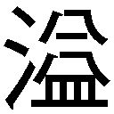

| ガガガ文庫 GJ部8（イラスト完全版） | |
| 新木伸 | |
| 小学館 (2011) | |
小学館ｅＢｏｏｋｓ
ＧＪ部８
目次
コタツの裏側
問診・天使真央
問診・皇 紫音
問診・天使 恵
問診・綺羅々
面白かった映画
レコードプレーヤー
タマイキ
蚊
おにいひゃん
ＧＪ部免許停止
一日自由券
赤色２号入ってねえ
ついったーなう
物語のなかの殿方
王冠
わびさび選手権
罵倒芸
新たなるフキダシ
京夜の特訓
REBIRTHDAY
じゃじゃじゃーん！
バランス
アンコあたまわるい
部屋の天井の隅のほう
チャレンジャー森さん①
チャレンジャー森さん②
にーたんばくはつしろ
グジョーブへようこそ♪
雪合戦
クリスマス
大晦日
除夜の鐘
巫女さん
迦楼羅神社のヒミツ
二回目の新年
あとがき
コタツの裏側
「はぁ～......。あたたかい......」
いつもの放課後。いつもの部室。
京夜はコタツにどっぷりとはまって、季節の楽しみを満喫していた。向かい側にいるしおんさんと二人して、天板にあごを載せてほんにゃりとする。
「ああ......。本当にあたたかいねえ......」
「ああほら。しおんさぁん......。布団もっていかないでくださいよ。こっち足りないです」
片寄ってしまった布団を引っぱって、中央に戻す。
ずれた天板をまんなかに直しているとき、京夜はふと、あることに気がついた。
「そういや、このコタツ......。天板の裏側が緑色になってますよね？ なんで古いコタツってみんなこうなんでしょう？ うちも昔のコタツは、こんなんでしたけど」
「タマんとこのコタツは、いまでも裏ミドリですよ？」
コタツの布団が、ばさっと持ちあがる。中から現れたタマがそう言った。
「うわぁ！ びっくりした！ びっくりした！」
しおんさんと二人っきりで入っていると思っていた！ そしたらじつは三人だった！
「びっくりしたー。びっくりしたー」
「はいはい。センパイ。びっくりしたですねー」
「そういやさ──。猫ってよくコタツ入ってるよな──」
「タマ猫じゃないですよ」
タマはぷるぷると首を振り、髪の毛から湿気を追い払う。その仕草がやっぱり猫だ。
「びっくりしたんだよ？」
うらめしそうに言ったが......。もはや誰も取りあってくれない。仕方ないから話を戻す。
「ところで話は戻りますが。『コタツの天板の裏側が緑のフェルトなのはなぜか問題』ですが」
「あれ？ なんだよおまえ。知らないの？」
「そういう部長は知ってるんですか？」
「そっか。おまえ。知らないンか。そぉ～んなことも知らねーのか。さすがキョロだな」
「なんですかなんなんですか。知っていないとそれ恥ずかしいことなんですか」
「タマ見習いだから、知らなくたって、とーぜんです」
「うん？ 私はほら......文献で読んだことはあるから。でも解答はもうすこし後のほうがいいようだね」
タマが胸を張り、しおんさんがほっぺたを天板に貼りつかせたままで、ほんにゃりと言う。
京夜は向こうのほうにいる恵ちゃんと綺羅々さんとに、目を向けてみた。
「わたしも知らないですよ。そこってアイロンかけるときに使うものだと思ってましたー」
「キララ。......辞書には載っていないと思います」
「そう。」
きょとんとした顔で綺羅々さんが辞書を置く。このあいだまでは大辞林だったが、最近は一周したのか、また広辞苑に戻ってきている。
「ねえ部長～。正解教えてくださいよ～。この緑色の裏って、いったい何に使うんですか～？」
部長は部屋の隅っこになにかを探しに行っていた。うずたかく積まれた物置の山に、体を半分突っこんで、がさごそと物をかき分けている。そのお尻ばかりが見える。
「正解はな......。これだっ！」
部長が持ってきたのは、小さいアタッシュケースみたいな、取っ手のついた木箱だった。
年代物の木箱をぱかりと開くと、中に入っていたのは──。
ホワイトチョコレート詰め合わせ。ではなくて。サイコロを直方体にしたような物体だった。白い直方体には色々な絵柄がついている。
「あー。あー。なんかこれ。見たことあります。なんでしたっけ？ まー？ まーなんとか」
「麻雀とゆーのだ」
「あー。そうです。マージャンです」
「この緑色の裏のところはだなッ──よっこらしょ」
部長がコタツの天板をひっくり返す。緑色の面を表にして台にする。
「麻雀のためにあるのだ。──ということで。やろか。麻雀。コタツもあるし。メンツも揃ってるし」
コタツの一面にすぽっと入って、部長は皆の顔を見回した。
「ええっ？ マージャンってそれ賭け事じゃなかったですか？ 賭博ですよね？ ガッコでまずいですよ。ていうか高校生でまずいですよ」
「ばかめ。高校生でなくてもガッコでなくても賭博は禁止だ」
「金銭を賭けなければ賭博ではなく単なるゲームだよ。点数を記録して勝敗を決めるだけならなにも問題はないね。また法律的には〝一時の娯楽に供する物の授受は賭博行為とみなされない〟とあるから、たとえばお菓子などをチップのように賭ければいいのではなかろうか」
「クッキーありますよー」
「じゃあテンイチな。千点でクッキー一枚な」
「うわなんか専門用語きましたよ」
「六人だから一人はラス抜けな。あとシイ。おまえは順番にみんなの背後霊な。教えてやれ」
「ん。そうだね。私が入ったら全部勝ってしまうからね」
おっかなびっくり。背後霊の紫音さんに教えてもらいながら、皆でコタツを囲んで麻雀というゲームをやった。今日のＧＪ部は〝麻雀の日〟だった。
問診・天使真央
「えーではまずお訊ねします。お名前と年齢と学年から」
「天使真央。九歳。小学三年生です」
「まーちゃんじゃなくて部長のほうでお願いします」
「ちっ。高校三年だよ」
「いまの舌打ちはなんでしょう。虫の居所がなにか悪い感じですか？」
京夜は事務的な口調で訊いていった。コピー用紙にさらさらとカルテがわりにメモを取る。
部室の片隅からは本当になんでも出てくる。京夜はここしばらく備品調査をやっていた。なにか面白いものが見つかるごとに、こうして遊びが始まって、一向に終わりが見えやしない。
今日発掘されてきたのは、白衣と聴診器だった。
それを使って、本日のＧＪ部の部活動は〝お医者さんゴッコ〟ということになった。
「まーちゃんはどこが悪いのでしょう？」
「おいこら。私はどっちでいりゃいいんだ。部長希望か。まーちゃん希望か」
「どっちも部長の一側面ですからどっちでもいいですよ」
京夜は丁重かつ投げやりに応じた。こういう役。お医者さんの役。紫音さんとかが一番似合いそうに思うんだけど。なんでお医者さん役が自分になるのか。
白衣が発見されたとき、期待する視線は五対一の比率で自分に集中していた。「はーくーい！ はーくーい！」と大合唱が起こってしまう前に、京夜は平和主義者っぽく素早く穏やかに敗北しておいた。埃っぽい発掘白衣に、自分から袖を通したのだった。
はぁ。とため息をついて、待合席を見る。
例によって例のごとく、椅子が並べられて待合室ができあがっていた。患者さんがあと四人も待っている。
「では部長はどこが悪いのでしょう」
「そだな。特に悪いところはないな」
「特に悪いところなし......。と。はい次のかた」
「診ろよ！ ちゃんと診察しろよ！ おざなりにもほどがあるだろ！ この診療報酬泥棒！」
「えー......？」
京夜は部長を疑惑のまなざしで見つめた。
「あのー。部長。まさかとは思いますけど。いわゆるガチでお医者さんゴッコをやれと言っているんじゃないんですよね？」
「なんだ素にもどりやがって。シラけるやつ。──ガチってなんだよ？」
「あのつまり。いわゆる幼稚園くらいのときにやるような......」
「ナニこーゆーのみんな幼稚園でやるもんなの？ 大流行してんの？」
「いえー。まーなんというかそのー。通過儀礼といいますか......」
「やっべえ。私やってねーぞ？ ──なぁ？」
と部長が待合席のほうに顔を振る。その顔色を見る限り、部長も紫音さんも恵ちゃんも綺羅々さんも──、タマ以外の全員のカオは、本当に知らないときのカオ。
京夜はタマと二人でうなずきあった。お医者さんゴッコの本当の意味は、永遠にヒミツにしておこう。二人の固い約束だ。
「ではここは心療内科ですから。いろいろ質問してゆきますので、答えてくださいね。ああ答えにくい質問でしたらそれはノーコメントでいいですから」
「お。キタキタ。おまえよーやくノッてきた！」
嬉しそうに部長が言う。いまこの瞬間、いったいどれほどの世界的危機が回避されたのか、この無邪気な御方はまったくわかっていらっしゃらない。
「部長っていつも怒ってますけど。なんでそんなに怒っていられるんですか？」
ぴとりと聴診器をおでこに当てて、訊いてみる。
「私に言わせりゃ、なんでみんなそんな落ち着いていられるんだ。おまえら怒ったりしねーのか？ それはあれか？ メグと同じってことか？」
「天使と一緒にしないでくださいよ。怒ることもありますよ。でも表に出さないだけです」
「なんで？」
「だってケンカになっちゃうじゃないですか。だから怒っていても、顔には出さないんです」
「えっ？」
部長はびっくりしたような顔になった。目をぱちくりとやっている。
「おまえって......。じゃああのっ......。これまでけっこう怒っていたりしたっ？ ......カオに出てなかっただけで、じつはけっこう怒っていたり......した？」
「今日はべつに怒ってないですけど。はーくーい、の大合唱には呆れましたけど。ああ。あれは実際には起こっていない未来でしたっけ」
「なに言ってんのかわかんないケド......。ええと......。今日だけじゃなくて、これまでもだよ」
「これまで......って？ この二年間近くって意味ですか？ 僕がＧＪ部に来てから？」
「うん。......そう」
なんか部長は気弱な顔になっている。下を向きつつ、上目遣いで、おそるおそる訊いてくる。
「嚙みついたりしてたの......。あれ......、だめだった？」
「いいえ。そういうのじゃぜんぜん怒りませんよ。霞に踏まれるので、僕、慣れてますし」
「そっかあ」
部長は、にぱっと破顔した。
はい。悪いところなし。カルテにはそう記入した。
問診・皇 紫音
「わかっているんだ」
こんどの患者さん──紫音さんの診察は、いきなり暗い表情からはじまった。
「なにがですか？」
「私の症状は常識欠乏症。治療法は常識の多量投与。カルテにはそのように書くといい」
「これは重症ですね」
なんか紫音さんがすさんでしまっている。捨て鉢になっている。
京夜はテーブルの上をとんとんと指先で叩いた。思案の末に、紫音さんに向けて口を開く。
「ではちょっと場所を変えてみましょう。診察の続きは、こちらでやります」
そう言って移動していったのは、コタツだった。布団の端をぱたぱたとやって、彼女を誘う。
つつつーと、滑るようにしてやってきた彼女は、すぽんとコタツの一面に収まった。京夜も反対側に席を取る。二人でコタツが二面ほど埋まる。
「はぁい。あったかーい、紅茶でぇす」
すかさず恵ちゃんが紅茶を淹れてくれた。
赤い液体を満たしたカップを両手のなかにおさめつつ、頃合を見計らって、京夜は訊いた。
「では貴方のお名前からもういちど」
「すめらぎ。しおん。......だとおもいます」
「はい。しおんさんですね」
カルテにあった〝紫音〟のところを二本線で取り消して、〝しおんさん〟と書き直す。
コタツの暖かみが浸透するまで待った甲斐があった。
「それでどうですか？ ささくれた気持ちは直りましたか？」
「うん。あたたかくって......」
しおんさんはコタツの天板にほっぺたを付けて、ほんにゃりと伸びきっている。なんか色々どうでもいいようなカオになっている。
「しおんさんに足りなかったのは常識成分よりもコタツ成分だったようですね」
「名医だっ。なんか名医がここにいるぞっ。イジけたシイを一瞬で手懐けやがった！ ああなると面倒なのにっ！」
部長がそんなことを言っている。親友ポジションからの含蓄ある一言だ。
「えーと。それじゃあギャラリーの皆さんから質問を受け付けたいと思います。なにか〝紫音さん〟もしくは〝しおんさん〟に訊いてみたいことは？」
皆が一斉に手を挙げる。はいはいはい、と自己主張する手から、いちばん元気なものを選ぶ。
「はい。恵ちゃん。質問を。どぞ」
「紫音さんっ、とっても大人っぽいんですけど。いったいどうしたらなれるんでしょう？」
「はい紫音さん。回答を。どぞ」
「あったかいと。いいとおもうよ」
「しおんさんじゃなくて、紫音さんのほうで。どぞ」
ぐんにゃりしていた〝しおんさん〟が、しゃきっと背筋を伸ばして、紫音さんに戻る。
「うん。それはね。......余裕かな。物事をすべてコントロールできているという心の認識から滲み出す余裕なのだと思うよ」
「はあ。ゲームをやっている時の紫音さんって。たしかにいちばん大人っぽいと思います」
「恵君も紅茶を淹れているときには、とても落ち着いて見えるよ。あと自分で気づいていたかな？ 編み物をしているときの恵君はまるで聖母のようだ」
「わっ。わわっ......！ ま、待っててください！ いまとっておきのお菓子を持ってきますっ」
「はい。キララ」
次なる指名は、いちばんひっそりと挙がっていた手だ。
「こたつ。......はいっていい？」
しおんさんの手首から先が、ぱたぱたと動いた。
コタツ番長の許可が下りたことで、綺羅々さんはコタツの三面目にすぽんと収まった。
「紫音ねーさん。タマとっても真面目な質問があるのです」
指名されてもいないタマが勝手に訊いている。なんか深刻な顔で質問している。
「紫音ねーさんって、天才ですよね」
「ああ。うん。そういわれているね。でも私にとってはその自覚はないのだけど。どうして皆に出来ないのか不思議で。むしろ私は皆と同じような感慨を物事に対して覚えたいと常々──」
「いったいなんの天才なのですか？ どのへん天才なのですか？」
その質問に、一瞬、時が止まった。ついで部室は騒然となった。
「ほ、ほ、ほらっ──！ タマほらっ！ ゲーム！ ゲーム！ ゲームの天才なんだって！」
京夜は大慌てでフォローに入った。
「えー......？ でもー？ ゲームしてるとこタマ見たことないですよ？ 天才天才って聞くだけで、タマ、スゴいところ見せてもらったことないのです。だから知りたいのですよー。紫音ねーさんが、ただの残念な人じゃなくて、どっかスゴいんなら、どうスゴいのかって──」
「ほ、ほらっ──いつも世界王者ビリーとチェスやってるよねっ！ ──パソコン席でっ！」
「ねずみさんカチコチですか？ あれなんかスゴいのですか？」
「いいんだ。こたつがあれば。......それでいいんだ」
紫音さんが布団を引き寄せてうずくまった。
「あー。ほら。またイジけちゃったよ。大変なんだよ。こーなると」
親友歴九年の立場から、部長が含蓄のある言葉を口にした。
問診・天使 恵
「はぁい。先生。診察お願いしまーす」
コタツから丸テーブルへと戻って、診察のつづきが続行される。
ぺこりと頭を下げたのは恵ちゃん。部長、紫音さん、ときたら、つぎは当然恵ちゃんである。それがＧＪ部のルールであり物理法則でもある。
「えーとではまず。名前から」
「天使恵です。身長は百六十二センチです。足のサイズは二十三てん五センチでぇ、あとえっと、スリーサイズはぁ──」
「うわあ恵ちゃん！ ストップ！ ストップ！ それアウト！ アウトだから！」
思わず京夜は叫んでしまった。いまなにを口走ろうとしていたのか。無警戒にもほどがある。
「そういうのは......いいから」
「ええ？ でも先生カルテ作れないですよ？」
「あー。はいはい」
ええと。身長と足の大きさと。あとスリーサイズは自主規制で、体重はそれ絶対禁忌だから。
「えーと。では問診いきましょうか──」
カルテに書きこみつつ、お医者さんの声でそう言った。
「先生。なんでそれ使わないんですか？」
恵ちゃんの白い指先が示しているのは、京夜が胸元にさげている聴診器。白衣と一緒に発掘されたアイテムだ。首にかけてるだけならいいが、実際に使用するとかなり危険なアイテムだ。
「いやあ。これは......」
「はぁい。どうぞー」
聴診器が京夜の両方の耳穴にぷすりと差しこまれる。先端の丸くなっている部分を手に持たされる。京夜のその手を覆いこむようにして、恵ちゃんは、自分の胸元へと──。
ぴとり。
聴診器および京夜の手は、恵ちゃんの胸元へと押しあてられた。服の上からではあるけれど胸の上。恵ちゃんの人並み以上に大きな──その場所の上。柔らかいその場所に、ぎゅーっと恵ちゃん自身の手によって押しあてられている。
とっくん。とっくん。女の子の心臓の音が聴診器ごしに聞こえている。
京夜の心臓はその数倍の速度で早鐘を打っていた。顔が赤くなってゆくのが自分でもわかる。
「心臓の音どうですかー？ わたし病気になったことなくて。診察してもらったことなくてー」
「うわっ！ うわっ！ うわわわわっ！」
京夜はようやく我に返って椅子ごと飛び退いた。びっくらこいたー！
でも病気になったことないって？ いったいどんなゴッツイ守護霊がついているのだろう？
心臓の鼓動が戻るまで待って。咳払いをひとつして。京夜は努めて話題を変えにいった。
「そういや僕......。前から恵ちゃんには訊いてみたかったことがあるんですけど」
「はい。なんでも訊いてください。先生」
「恵ちゃんってさ。怒ったこととかって。......ないの？」
「うーん......？」
京夜の質問に、恵ちゃんは真剣に考えはじめた。
「このあいだ......。ていうかだいぶ前。タマちゃんが......。食べてもぜんぜん太らないんだって、聞いたときですか。あのときなんだか......。胸に......。覚えのないようなカンジが......。あれって、そうなんでしょうか......〝怒り〟っていうもの？」
「ああ。うん。あれは怒りだね。怒りでいいんじゃないかな。怒りだと思うよ」
「怒ってたですか！ メグねーさん。タマなんか悪いことしちゃったですか？」
「もう怒ってないですよー。たぶん」
「ひいっ。怒ってる。怒ってるですよ。メグねーさん絶対怒ってるですよ」
笑顔に怯えたタマが、背中に隠れにきた。京夜は笑った。
「はい。質問タイムです。みなさん。なにか質問はないでしょうか？」
「イヤ天上界の生物はいまいち面白味に欠けるしなー」
コタツですっかりくつろぐ三人衆を代表して部長が言ってくる。
「あのー。......タマちょっと訊きたいことがあるですよ」
京夜の背中に隠れたまま、タマが小さく手をあげる。
「体重以外のことでしたらどうぞー」
「メグねーさん。誰か好きな人とかいるですか？」
「うっわ、ド直球っ。コイバナきたか」
部長がニヤニヤ笑いをしながらコメントする。
「たくさんいますけど？」
「うっわ、怯まねえ。真顔で返すし」
「何人いるのか。もっと具体的な人数を恵君に訊いてみるべきではないかな」
紫音さんもそして部長も、その顔は笑っている。返ってくる答えがわかっているという顔だ。
「ななな何人いるですかっ！」
「ええと......。いまって七十億人になったんでしたっけ？」
「へ？」
タマがきょとんとした顔をする。コタツ三人衆も、そして京夜も、まったく驚いていなかった。予想がついていた。恵ちゃんにその手の質問をぶつけたら、「人類すべて大好き」と返ってくるに決まっている。天使をなんだと思っている。
問診・綺羅々
「はい。それでは次の患者さん。どうぞー」
ＧＪ部式お医者さんゴッコも、最後の一人、綺羅々さんの番となる。
「ねえ。タマどうしてそっちに並んじゃいけないですか？」
タマが言う。綺羅々さん一人となった待合席を見つめる。
「べつに並んでもいいんだよ。でもキララが終わったら片付けはじめるけど」
「うお。キョロおまえそれ鈍器。コトバの鈍器すぎる」
「いいですよ！ ミソッカス上等ですよ！ タマはこっち側で遊ぶですよ」
タマが持ちだしてきたのは、ナースさんの服。そういえば白衣と聴診器とセットであった。
くるっとひとまとめにする感じで、タマは上着とブラウスとを脱ぎはじめた。その場で着替えをはじめてしまったタマの肌色部分から──京夜はしぱっと体を回転させて、視線を背けた。
前の椅子に座った綺羅々さんのほうに向く。
「きららも。ぬぐ？」
「ぬぎません」
「なにから。いうの。」
「えーと」
「体力測定するですよ。こんなの見つけたですよー」
ナース服に着替えおわったタマが握力計を持って転がってきた。
「あ。それ。先々代部長あたりが体力測定の日にパクったやつ」
「ちゃんと体育準備室に返しときましょうよー」
そういう京夜も、綺羅々さんのパワーには興味があった。握力でいうと、いったい何キロくらいになるのだろう？
「これ。にぎればいい？」
「はい。おねがいします」
「ん。」
さして力をこめたとも思えないのに、握力計の針は、ぎゅんと超回転した。
そして〝ぐしゃっ〟と鈍い音。
「......こわれた。」
ぱらぱらと落ちるプラスチックの破片を手から払いながら、綺羅々さんは言った。
握力計の針は測定範囲の二百キロをさらに超えたところで、ぐにゃりとねじ曲がっている。そして握りのところとフレームのところと、プラスチックは砕けている。
「おいそれ。その握力計。返してこいよな。キョロ」
「なかったことにしましょう。紛失扱いのままにしときましょう。いまさらきっと平気ですよ」
握力、測定不能──と、アシスタント・ナースのタマが、カルテに記入する。女の子文字で、♡やら猫の顔やら、余計なものまで記入している。
「センセ。タマ。トラねーさんに質問があるですよー」
「コイバナだったらもうしなくていいよ」
「ちがうですよ。肉。肉ですよっ」
「おう。肉か。そだな。気になるよな。なんで肉ばっか食ってるのかとかサ」
「私が気になるのは一体なんの肉かというところだね。ひょっとしたら二兄ぃも知らない食材がまだ地球上には存在するのかもしれない」
「わたしはー。あの骨さんをどうしているのか気になりますー」
このテーマには皆も興味津々のようだった。
「いいえ。そっちじゃないです。そんなの。どーだっていいです」
タマは皆の疑問をあっさり退けた。あいかわらずマイペース。
「じゃオマエ。なにが気になるってゆーんだよ？」
「そんなの決まっているですよ」
タマは腰に手をあてて気取ったポーズを取った。もう片方の手には注射器を持ち、そんなこともわかんないんですか、ダメダメです、と振り回す。アブナイからそれはやめて。
「肉ばっか食べてると、クサくならないですか、おならとか、ウ──」
「うわあああ！」
女の子たちの絶叫が響いた。タマはよってたかって女の子たちに潰された。
部長だけでなく、綺羅々さん本人だけでなく、紫音さんも恵ちゃんも参加して、タマを押さえて口を封じにかかる。ぽかぽか叩いて──。滅殺を完了する。
「よし。悪は滅びた」
床にのびたタマの上に、どっかと腰を下ろして、部長が言う。
「ナンだよ？」
じろりと部長ににらまれる。
いやあー。こえー。こわかったー。女の子こええーっ。
「それではタマの番です」
部長を背中に乗せたまま、タマが腕立て伏せの要領で復活した。
「センセ大変です。タマ重体です。これでタマも診察しやがれです！」
「うん全治五秒だったね。もう完治したよ。退院おめでとう」
「ミソッカスいくないですよー！」
今日の部活動は〝お医者さんゴッコ〟だった。ローテーションはいつにも増してヘビーでデンジャラスだった。
面白かった映画
「ねえ部長。昨日やった映画、観ました？」
いつもの部室。皆に紅茶が出回った頃を見計らって、京夜は話題を切りだした。
「うん？ なんだいきなり？」
「いえ。昨日テレビでやっていた映画が面白くって、部長も観てたかなー。なんて思いまして」
「いや観てねーけど。......映画って、なに？ 九時あたりから流れてるよーなやつ？」
「ええ。はい。うちは父さんが映画好きで。霞と、あとオカンと、みんなで──」
「おまえんち。みんなで家族団らんするんだ。めずらしいな」
「え？ へんですか？」
「いや。へんとは言ってねーけど。めずらしいって言っただけだけど」
「ううんっ......。昨夜の映画だね。私は観たよ。それ」
咳払いがひとつ。パソコン席から椅子のキャスターを滑らせて、紫音さんが参入してきた。
「あらゆる取引材料と交渉テクニックとを駆使して〝てれび〟の視聴を認めさせたんだ。現段階では映画の一部に限るという条件付きではあるけれど。昨夜の映画はリストの中に存在──」
「おまえんちも兄妹団らんか？ いったい何人で観た？」
「うん？ そんな大勢じゃなかったよ。ほんの十人ほどだから」
「お兄さんたちにプチ抵抗中なんですね」
兄兄ズの総人数は確かめないことに、京夜は決めていた。
「タイトルなに？」
部長が訊いてくれたので、京夜は映画のタイトルを告げた。
「あー。あれか。テレビじゃ観てねーけど。ブルーレイでなら観たぞ」
「わたしも観ましたー。お姉ちゃんと聖羅と一緒に地下室でー」
紅茶の香りを伴って恵ちゃんがやってきた。皆のカップに紅い液体が満たされる。
なんだか聞いている限りでは、地下室にシアターがあって姉妹揃って観たとかいう話に聞こえてくる。天使家のブルジョア事情は気にしないことに、京夜は決めていた。
「あれ良かったよな。暴れっぷりがスカっとしたよな。面白かったよな」
あれ？ と京夜は首を傾げた。そゆとこがウリの映画だったっけ？ まあハリウッド映画だから、たしかにアクションシーンはないこともなかったけど。
「ロマンスよかったですー。男の子は頑張って。女の子は健気で。素敵でしたー」
恵ちゃんがうっとりと、手を組み合わせて乙女のポーズで言っている。
あれ？ と京夜はまた首を傾げた。そゆとこがウリの映画だったっけ？ まあハリウッド映画だからロマンスの一つや二つ入っていたけど。
「ああ。うん。生と死に関して語っていた高尚な物語であったね。生と死をテーマにしている以上、アガペーとエロスに関しても扱わざるを得ないわけで、だいたい五兄ぃだって彫刻で裸婦像を作ったりしているのに、なぜ私が鑑賞するのはだめというのか」
最後のほうはなんか兄兄ズへの愚痴になっていたけど。そんなエッチな映画だったろうか？ まあハリウッド映画だから、そゆ場面がないこともなかったけど。
「ええっと......。あのー......？」
この嚙み合わなさかげん。ひょっとして、皆で違う映画の話をしているのでなかろうか？
「ちょっとみんな、もういっぺん、映画のタイトル言ってもらえます？」
皆がそれぞれ口にしたタイトルは、京夜が昨夜観たものと、まったく同じだった。
「あれえ？ あれえ？」
「なにどうした？ なにムズがってんのおまえ？」
「いやあ......。なんかみんなの感想がぜんぜん違うもので......。〝良かった〟ってとこまでは一緒なんですけど。その理由についてが......」
「そういうおまえはどこが良かったん？」
「ええもちろん。ハラハラドキドキ退屈しなかったところですけど。だってハリウッド映画って、そういうものですよね？」
「いやおまえみたいにプチ評論家を気取るほど映画観てねーし。あと上から目線で語っちまうほど下衆でもねーし」
「うぐう」
部長の言葉が心に突き刺さる。評論家気取りっていわれた。下衆っていわれた。
「ところでさっきからずっと、大虎と子猫とが話に入れなくて困ってるようなんだけど」
「タマのとこチャンネル争い激しいのです。映画とか観れないのです」
「あ。すいませんでした。キララのところ、テレビないんですよね」
「きらら。てれび。これ。」
綺羅々さんが指し示したのは、年代物のテレビだった。部室の隅で夏以来埃をかぶっている。
「地デジになってから、映らねーよなー、これー」
「アナログマ、地デジカに倒されちゃいましたからねー」
「おつかれさま。なむなむ。」
「うちくっか？ みんなでみっか？」
「森さんの作ってくれるポップコーン。おいしいんですよー」
その日の部活動の続きは、天使家で行われた。地下室のシアターでポップコーン片手に特等席で大画面に見入った。
今日はひとつ新しいことを学んだ。
同じ時間を共有して、同じ映画を観ていても、感動する場所は人それぞれだということだ。

レコードプレーヤー
「わぷっ」
ふうと息を吹きかけると、ぶわっと埃が舞いあがった。それを吸いこんでしまって、けしょんけしょんと大きく咳きこむ。
「四ノ宮君。お手伝い。しましょうかー？」
「いいってやらせとけよ。いろいろ覚えとかねーと。来年困るの。あいつだし」
「ああ平気だよ。ちょっと埃吸っちゃっただけだから」
恵ちゃんのヘルプもやんわりと断って、自分一人で作業を続ける。
今日の部活は一人大掃除だった。
部室の隅はちょっとした物置と化している。年に何度かやってくる備品調査のリストを片手に、品々の確認をしながら、ついでに掃除もやっているわけだった。
本来は部長がやるはずの仕事だが、今回は京夜に一任されている。
部長は足を椅子の上に引きあげて、ニーソのつま先をぴょこぴょこと動かしながら、じーっとこちらを見てくる。顔を向けるとそっぽを向くが、作業に戻ると、またこっちを見ている。
監視されているのやら。それとも心配されているのやら。
「つぎ。レコードプレーヤー......っと。あれ部長？ レコードプレーヤーってどれですか？ ていうか、レコードプレーヤーってなんですか？」
「レコードを聴く機械に決まってんだろ」
「だからその〝レコード〟っていうの、なんなんですか？」
「は？ おまえマジで言ってんの？」
部長はとことこと歩いてくると、段ボール箱の一つから、縦横三十センチはありそうな、正方形の紙のパッケージをいくつか取り出してきた。
「ほい。これがレコードな。ＬＰ版ってやつだ」
紙のパッケージから現れたのは、プラスチックの真っ黒な円盤だった。
「ほーへーはー。でっかいＣＤなんですね」
「ぷ......」
パソコン席で紫音さんの黒髪が揺れる。
「あれあれ？ なんかおかしなこと......言っちゃいました？ 僕？」
「かわいいね。......キミは」
ひさしぶりに聞くフレーズ。目頭の涙を拭いながら紫音さんもやってくる。膝に手をついて発掘現場を覗きこんで──。
「あ。これカラヤンじゃないか。第九。しかも六二年っ。ＣＤは持っているのだけど。レコードのほうは聴いたことがなかったんだ」
紫音さんはパッケージを手にしたまま、そのあたりでなにかを探し始めた。
「こら聴くのかよ。おまえ片付けとかゼッタイ苦手なタイプだろ」
「真央の部屋ほどひどくはないよ。十兄ぃが三日に一度は掃除をしに──ああ。あった」
レコードの大きさに見合う、どデカい物体が発掘された。
コンセントを持ってきて、アンプとスピーカーまで掘り出してきて、紫音さんは、せっせとセッティングに励んでいた。
やがてレコードが回転をはじめた。音が聞こえてくる。
「あ。これ僕も知ってます。ベートーベンですよね」
「タマも知ってるですよ。これ葬式にかける曲です」
「いやかけないと思うけど」
「うちの葬式だとかけるですよ？」
「あれ？ タマのところって神社じゃあ──」
「あの。これ。かける？ きらら。ききたい。」
綺羅々さんが、発見したレコードを胸に抱いて、目をキラキラとさせている。
「えーと。タイトルなんだろこれ？ わんにゃんけろよん？ ......動物鳴き声集でしょうか？」
「かけてみりゃわかんだろ」
ためしにかけてみると、予想通り──ワンワン、ニャーニャー、ケロケロッと、色々な動物の鳴き声が響いてきた。オオカミの遠吠えなんかも収録されている。
「ううう......。ウオオオォォォ──ンッ！」
突然、綺羅々さんが喉を反らせて吠えはじめた。
「うわビックリした！ キララが野性に戻りやがったっ！」
皆が集まってからは、賑やかなことになった。レコードを掘り出してくるのに夢中になる。
「これなんでしょうか？ 昔のアニメのＢＧＭ集とかでしょうか？」
虎縞ビキニの女の子のアニメ絵のパッケージから出てきたレコードは、なんか、シャカシャカ、チュイーンと、不思議な音色の曲ばかりが入っていた。
「シンセサイザーという楽器だね。一九八〇年代あたりに大流行したそうだ」
恵ちゃんが発掘してきたのは人魚姫。黒いレコードではなくて、ソノシートとかいう──下敷きよりも薄っぺらくて、ぺなぺなで、向こう側が透けて見えるような物体から、童話の朗読が流れだしてきた。
「かわいそうですー」
ラストの人魚姫が泡になるシーンでは、天使の涙がぽろりと落ちた。
その後もみんなで、あれをかけて、これもかけて──と、本日のＧＪ部の部活動は、レコード鑑賞会だった。
タマイキ
「なぁ。タマってな。変だよな」
いつもの放課後。いつもの部室。部長が突然、へんなことを言った。
「そうですね」
もちろん京夜は慣れているので、ごくごく軽く、受け流した。文章を追いかける目を持ちあげることもない。
「かまえよ。踏みこんでこいよ」
「きちんと聞いてますよ。話してくださいよ」
「よって私はアレを〝タマイキ〟と命名することにしたのだ」
「すいませんわかりません。やっぱりよく聞いてなかったみたいです。はじめのあたりからもういっぺんお願いします。とくに〝アレ〟のあたりから」
「言ってねーもん。とーぜんだよ」
「あー。はいはい。つまり僕はからかわれていたわけですね。これで終わりでいいですか？」
「どちらかとゆーと、いま私のほうが、からかわれていた気がするんだけど」
部長とのこんなやりとりも、いつものことで......。そろそろ本題に入るかなー、と京夜が思ったまさにそのタイミングでもって、部長は本題を切り出してきた。
「──タマってな。変じゃん」
「いろいろ変だとは思いますけど、とくにどんなとこですか？」
「あいつってさー、いっつも、へんな話しかたするじゃん」
「あー」
言わんとしていることの見当が、なんとなくついてきた。
「なんですか？ タマの話をしてやがるですか？」
「ううんちがうよ」
反応してきたタマに、京夜はさらりと言い返した。
「そですか」
タマはポテチをわしづかみにすると、読んでいたマンガ雑誌に戻っていった。
部長の相手は京夜の仕事と決めこんで、ろくすっぽ聞いてもいなかったはずだけど、自分の名前にだけは反応したらしい。
「そういうの。カクテルパーティー効果というらしいね。パーティーのような賑やかな場所であっても、人は、自分の名前にだけは鋭敏に反応するということだ」
チェス対戦に向かう紫音さんが、その黒髪で語ってくれた。超能力的に解説してくれた。そしてマウスをコチコチやりながら世界統一王者さんを追い詰めている。
「アイツってさ。へんじゃん。しやがれですよ。とかさ。ナマイキに聞こえることゆーじゃん」
「そういや時々おかしな喋りかたになりますねー。あの子って」
名前だけは匿名にして伏せて、内緒話のほうは続行する。
本人がそこにいる脇で内緒話を堂々と行う。これが案外とバレない。ひるまずに堂々と行うことが〝ＧＪ部式密談〟のコツである。
「あれ本人は敬語のつもりなんだぜー？」
「ああっ──!!」
京夜は思わず手を打ち鳴らした。急にわかった。
「んだよ！ ビックリしたよ！ なんだよおまえいきなり叫ぶなよ──キョロのくせに」
「僕だって叫ぶときくらいありますよ。──それよか部長、部長、聞いてくださいよ。大発見ですよ！ 彼女のあれは尊敬語だったんですよ！」
「それはいま私が言った」
「日本タマ学会においてはそれが主流の見方だね。他にも彼女流の甘えや媚びの表現であるという説も少数派ではあるが存在する。また我々にケンカを売っているのだという異端の説を唱えてやまない者もいたが、先日無事に学会追放となった」
「てか学会ホントにあったんだ」
「学会ってほんと、なんでもできるんですね」
「わたしは甘えてくれてるんだと思いたいですー。科学にもロマンティシズムは必要ですよぅ」
ホットの紅茶を注いで回りながら恵ちゃんが言う。彼女が通り過ぎると小皿にクッキーも補充されている。手の動きはぜんぜん見えないのだけど。
「いやぜんぜん科学じゃないと思うけど」
「キララはどーなん？ おなじネコ科としての意見はどーなのよ？」
話を振られると、綺羅々さんは、ぷるぷると首を横に振って返してきた。ネコ科はネコ科でも、大型肉食系とイエネコ系でぜんぜん種族がちがうから、わかんない、とでもいうカオ。
「ん？ ん？ ん？ センパイたち......？ なんだかさっきから、タマのこと話していやがらないですか？ タマの話なら、タマもまぜやがるですよ。仲間はずれいくないですよ」
「おまえの話なんかしてないぞ。タマイキの話をしてるんだぞ」
「はー。そうでしたか」
タマはなんか納得したカオになり、マンガ雑誌へとまた戻っていった。
部長。おそるべし。
タマ。ちょろすぎ。
「んで。あれを〝タマイキ〟と命名しようと、私は思うのだが。──どうだろう？」
皆に顔を巡らせて、部長が訊く。
タマがタマ的にナマイキなことを、それからＧＪ部では〝タマイキ〟と呼ぶことになった。
蚊
いつもの放課後。いつもの部室。
部室でタマと向かいあってゲーム機で協力プレイに勤しんでいると──。
「センパイ。──動かないで」
そんな声が聞こえた直後──ばっしーん、と、いきなりタマに平手打ちをかまされた。
「なっ？ なっ？ なっ？ ......なんばすっと？」
じんじんする頰を押さえて、信じられないという目をタマに向けていると──。
「あ。逃げた」
「な......？ なに？ なんなの？ なんでぶたれるの僕？」
「蚊ですよ。蚊」
タマは鋭い目で、じいっと空中をにらんでいる。
「蚊？」
ようやく状況がわかって、京夜は宙を見上げた。たしかになにかが飛んでいた。ぷいぃ～んと、あの馴染みのある羽音も耳を澄ませば聞こえてくる。
「なにどしたん？ おまえタマになに失礼なコトしやがったん？」
「蚊がいただけですよ。手加減なしで叩かれましたよ。あー痛かった。まだ痛い」
「か？」
部長のポッキーがぴたりと止まる。
「〝か〟って......〝蚊〟だよな。......あれだよな？ ......刺してくるやつだよな？」
なんか怖々としたカオで、部長は空中を見上げている。
「蚊っていったらそれしかないですけど。だけど季節外れですよね。もう十一月も終わりますよ。ほとんど真冬ですよ。夏のあいだもぜんぜん見かけなかったのに......」
「そ？ そなの？ 冬だと蚊って出ないもんなの？ 出るの夏だけなの？」
「え？ なに言ってるんですか部長。そんなの常識でしょう」
「そ。そうなのか。じ......、常識なのか？」
そう答えてきたのは、紫音さん。彼女が常識を知らないのは、いつものことではあるけれど。
そんな話をしていると、ぷいぃ～んと、蚊が飛んできた。
「ひあぁ」
悲鳴をあげて、京夜の背中に隠れに来たのは、こんどは恵ちゃん。熱湯のポットを手にしたまま、京夜の肩に手を置いて、やや震えぎみに──。
蚊を怖がっているようだけど、ある意味ちょっとこちらも怖い。お願い。ポット置いてきて。
「恵ちゃんも......、怖いの？ 蚊が？」
「子供のころに刺されたんですよぅ。そしたらすっごくかゆくなって......」
「ええ？ 子供のころって......？ 蚊なんてそんなの？ どこにでもいるよね？」
「うちにはいないんですよぅ。森さんがやっつけ......、指弾で撃墜......、──ひゃうう！」
話の途中でまた蚊が飛んできて、恵ちゃんが逃げだした。姉である部長の背中に隠れにゆく。
「こら。おま。メグ。姉を盾にするな。こら！ ──いいのか！ 姉が刺されてもいいのか！」
「恵ちゃんって......。クモ平気なのに蚊はだめなんだ」
「実害のある生物を回避しようとする心の働きは生物として当然の行為であるといえよう。恵君本来の性質がいかに天使的であるとしても痒みという現実の害を与えてくる生物を博愛できなくともこれは仕方がないことといえる。そしてもちろん私も一個の生物であるから──」
言葉だけを聞いていれば冷静だが、紫音さんは椅子の背に摑まってガチガチに固まっていた。
天使家の屋敷に蚊が出ないのは森さんの性能であるとして、皇家に蚊が出ないのは兄兄ズのおかげだろうか。何人目かのお兄さんが〝蚊取りマイスター〟とか？
「にゃっ！ にゃっ！ うにゃっ！」
タマがぱしんぱしんと手を打ち鳴らし、蚊を叩きつぶそうと頑張っている。
「わー！ わー！ こっちきた！ きたあぁ！」
部長が椅子を転がして逃げまどう。ハチとかだったらともかく──たかが〝蚊〟一匹に、部室は大騒ぎとなった。
混乱を極める部室の中で、京夜はひとり、ゆうるりとお茶をすすっていた。
ああ。紅茶がおいしい。今日のこれ。ダージリンかと思ったけど。たぶんドアーズだよね。
「恵ちゃ～ん。おかわり～」
「ひああ。お姉ちゃん！ お姉ちゃん！ 助けてしおんさぁん！」
恵ちゃんは忙しそうだ。
「わ！ わ！ わわっ！ ぷ～んって！ いま耳元ぷ～んって!?」
紫音さんはクールビューティが台無しだ。
「うにゃ！ うにゃっ！ うにゃぁっ！」
タマは野性の力を試している。
混乱が最高潮に達した、そんなとき──。ぷいぃ～んと羽音を響かせながら、蚊は、ソファーでくつろぐ綺羅々さんのほうへと向かっていった。
その瞬間──。
がっちーん！ ──と。なにか歯でも嚙み合わせたような、そんな激しい音が響いた。
蚊の羽音はぱたりと途絶えた。その後、蚊の姿は部室のどこにも見当たらなくなった。
いったいなにが起きたのか。京夜は深く考えないことにした。
部室に平和を取り戻した綺羅々さんは、もぐもぐと口を動かし続けていた。
いつものように、もぐもぐと......。
おにいひゃん
「おにいひゃん」
四ノ宮家のリビング。
夕飯までのひと時を、ソファーに寝転んで過ごしていた京夜は、霞の声に身を起こした。
「そころいて」
「あ。うん」
霞のために座る場所を作ってやる。
隣に腰を下ろしてきた霞は、ふう、とため息をついてから、口許へと手をあてた。
「どしたの？ 霞？」
「はに？」
「いやさっきから......」
聞き間違いでなければ、最初に呼んできたときには、なんか変なふうに呼ばれた。
たしか〝おにいひゃん〟だとか──？
そしていま返ってきた返事も、なんだか、ひどく舌ったらずなものだった。
「いひゃいの」
「位牌？ 位牌なら仏壇のところに──」
「ひはう。いひゃいの。......くちひる」
「わかった！ 唇が痛いんだ！ そう言ってるんだ！」
正解したのに、なんでか、ぽかりと殴られた。
霞が手をどけると、その口許に傷が見えた。縦にぱっくりと──その唇が割れている。
「どしたの!? それ!?」
ほっぺたを両手で挟んで引き寄せ、唇の傷を、間近でよく見る。
「なんなの!? これ!? まさかケンカ？ 女の子がケンカとかよくないよ。ええっ？ もしかして誰かにぶたれちゃったとか？ 誰それそいつ。僕が言ってきてあげようか。僕だって第二段階になればねっ──」
慌てていたら、またぽかりと殴られた。
「ふゆやから......！ きえたらけ！」
「あー。はいはい。切れるよね。乾くとね。いま冬だしね。あれってけっこう痛いよね」
京夜がそう言って同意を示すと、霞は何度もうなずき返してきた。目尻にじんわりと涙が浮かんでいる。
ソファーに二人して並んで、夕飯までの時間を過ごす。
テレビはついていても、特に見ているわけではない。
夕食を作るオカンの鼻歌をＢＧＭに聴きながら、京夜は雑誌を読んでいる霞に、ちらりと目を向けた。
そのうちに、視線のしっぽを捕まえられてしまう。
「はに？ おにいひゃん？」
「それもういっぺん言って」
「はにを？」
「だからそれ。〝おにいちゃん〟っていうやつ」
「おにいひゃん」
唇が動かせないために、舌ったらずな呼びかたが返ってくる。
その呼びかたに──、なんだか──、むずむずとする感覚を覚えた。
「もいっぺん。呼んでみて？」
変な感覚を確かめるために、霞をもういっぺん拝み倒す。
「はんはを？ おにいひゃん？」
むずむずー。
なんだろう。なんなんだろう。この感覚？
「あの。えーと。霞。......いっかな？ もいっぺん」
「おにいひゃん」
むずむずー。
やっぱり気のせいじゃない。なんか変な感覚が背中を這いあがるように......？
「ううー......」
霞がなにか唸っている。うらめしそうな顔で京夜のことを見つめている。
「ねえ霞。もういっかい」
「もうやら」
「そんなこといわないで。もいっかいだけ。いいよね？」
「らめえ」
うわっ。まただった。
むずむずー！
いまのは強烈だった。〝おにいひゃん〟よりも〝らめえ〟のほうが遙かに強烈で──。
「霞。いまの──」
「もお──！ おにいひゃん！ くひ！ いひゃいんやから！」
怒られた。
霞にこっぴどく叱られた。ぽかぽかぽか、と、小さなこぶしで叩かれた。
唇が痛いのにそこまで頑張ってくれた妹への、せめてものお詫びとして──。京夜は霞にリップクリームをプレゼントした。
ＧＪ部免許停止
いつもの放課後。
部室に向かう長い廊下を京夜が歩いていると、廊下の先に部長の姿が見えた。
戸の前に立って、なんでか、京夜のことを待ってくれている。片手を挙げて、その部長に挨拶しようとすると──。
「おまえに決定事項を言い渡す」
「はい？」
口を「へ」の字に結んでそう言った部長に、京夜は、きょとんと首を傾げた。
「これは最高評議会による決定である」
「ああはい。じゃそれ中で聞きますから。通してくださいよ。そこどいてくださいよ。部長」
「──だめッ！」
ちっちゃいカラダを張って、部長は戸をガードした。
「入れませんよ。部長」
開けようとする京夜の手と、押さえようとする部長の手のあいだで、戸がガタガタと騒ぐ。
「──聞くのッ！」
「はい。はい。それで、なんなんでしょう？」
ようやく観念して部長の話を聞くことにする。半ベソの部長は、服をはたいて──。手ぐしで髪を整えて──。威厳を取り戻してから、大きく胸を反らした。重々しく口を開く。
「オマエは最近チョーシにのっている。よってＧＪ部免許を停止することにする」
「はい？ 免停ってなんですか。免許なんてあったんですか。ていうか僕いったいなにやったんですか。反省しましたから入れてください」
「おまえぜんぜん反省してねーだろ」
「いえ反省しましたよ。なにをやっちゃったのかわからないですけど、すごく反省してます」
「もしそれを本気で言っているならある意味称賛に値する」
「僕の反省力を試してみてくださいよ。どんなことでも反省できますよ」
「オマエ。メグの絵本。燃やしたろ」
「あっ」
京夜は言葉を呑んだ。
すこし前に京夜は恵ちゃんの絵本を燃やしてしまった。赤井烈斗からプレゼントされた手製の絵本だ。恵ちゃんは喜んでいたのに、それをストーブにくべてしまった。ひどいことをした。
「烈斗に謝ってこいって言われたろ。ちゃんと謝ってきたのか？」
「えと」
かわりの絵本はすぐに描いて恵ちゃんにプレゼントしたけど、あいつに対する謝罪のほうはまだだった。だって──。
「あ、あれは......、そもそも部長がけしかけたんじゃないですか。燃やせ燃やせ、やっちまえ、って、そう耳許でえっ......」
「お。言いわけすんのか？ 男らしくないな」
「あのときには僕〝男なら燃やしちまえ〟ってそう言われたんですけど？」
「よっておまえは免停なワケだ。──三日間なっ」
三本指のダブルＶサインを突き出してくる部長の背中側で、戸がうっすらと開いてゆく。
隙間から紫音さんが顔だけを出して、京夜を見つめる。
「すまないね。君がいつ謝罪に行くか見守っていたのだけど。一向に行かず、それどころか、すっかり忘れてしまっているようだったのでね。約束を違えるのは、やはり、よくないよ」
「はい......」
紫音さんに言われては、殊勝にうなずくしかなかった。恥ずかしさに顔を赤くして、頭を垂れるしかない。部長に言われるとなんでか釈然としないんだけど。
「そーゆーこった。まあ安心しろ。罪を償ってきたら、チクチクねちねちイジメたりしねーから。すぱっと終わらせて、ぜんぶ済んだコトにしてやっから。──なっ？」
部長は朗らかに笑った。
「ところでさっき君の言ったことで私の記憶に掛かったことが一つあるのだけど」
「なんだコイツまだ余罪あったの？ 免停四日くらいに増やしとく？」
「......真央。君も同罪だったね」
「へ？ んなっ？ な？ なっ？ ──なんで私がっ？」
「だって教唆しただろう？」
「きょうさ。は。......おしえそそのかす。のいみ。こうじえん。より。」
ドアの隙間の紫音さんの頭の上に、にゅっと綺羅々さんの頭が生えてくる。
「犯罪を決意させた教唆は正犯に準ずる、というのが刑法における国際標準だね。キョロ君に罰を与えるならば、法の公平性に鑑みて、真央、君にも同じ罰を与えねばならない」
女判事の顔で、紫音さんは宣告した。ぽんと背中を押されて、部長が廊下側に何歩かよろけ出す。そして、ぱたり──と、戸が閉ざされた。
部長と二人して、部室からシャットアウトされてしまった。
「開けろー！ 私は部長だぞー！」
ちっちゃい手で部長はどかどかと叩くが、戸は固く閉ざされたままだった。
「入れろー！ 入れやがれー！ ......入れてください」
「僕も......、反省してますからぁ......」
二人して半泣きになって、弱々になってつぶやいた。十二月の廊下は、ひどく寒かった。
一日自由券
いつもの放課後。いつもの部室。
丸テーブルの自分の席で、京夜はぼんやりと、一枚の紙切れをもてあそんでいた。
「なんなの？ それ？」
隣の部長が、さして興味もない感じで訊いてくる。
べつに隠すことでもなんでもない。京夜はさらりと口にした。
「一日自由券ですよ」
「なにそれ？ どこの券？」
「あれほら？ よくしませんでしたか。肩叩き券とか。お手伝い券だとか。子供のとき作って渡したりしませんでした？」
「あー。やったやった」
よかった。ちょっとほっとした。天使家では違うのかと思っていたが、そういうところは、一庶民の自分たちとおんなじだ。
「なのでこれは、霞のことを一日自由にしていい券なんです」
「イイイーッ!?」
部長がなんか超反応してきた。その大声に驚いて、部長に目を向ける。
「な。なんですか？ いま僕なんか変なこと言いました？」
「いやおまえ。だってそれって......、きっ──禁止っ！ 禁止だそーゆーのっ！ 恥を知れ！」
「いえ禁止もなにも」
券をひっくり返して裏面の注意書きを見せる。
「ほらここ。〝お兄ちゃんのゆうことなんでもききます。一日ゆうこう〟......ってありますよ」
「うっわ、霞マジだよ......」
部長の顔色が、すうっと変わってゆく。
「ちょっといいかね。差し出がましいとは思うけれど、ひとこと言わせてもらうよ。キョロ君。君はその券でいったいなにを──」
「──マテ！ 待てシイ。早まるなッ！ もうすこしだけ様子をミロ！」
飛びこんできた紫音さんが、なにかを言いかける。部長がそれを制止する。
「ああ。うん。そうだね真央。......そうしよう。冷静に。冷静にならなければ」
なんか怒ってる感じの二人が丸テーブルにつく。
京夜は二人を前にして、おおいに困惑していた。
なんだろう？ この空気？ なんか叱られているような？ 尋問でも受けているような？
「おま。その券でなにするわけ？」
「ええと......。どうしましょう？」
「わたしがきーてんだよ。おまえがきーて、どうすんだよ」
「キョロ君。熟考したまえよ。そして分別のある紳士な選択を期待する」
「ああ。そうです。ゴミ捨て替わってもらうことにしますよ。木曜の朝の──」
「フザけるな！」
部長に大声で一喝された。
「おまえ女心を一体なんだと──！」
「待て。待つんだ真央。早まってはいけない。もうすこしだけ様子をみよう」
「そ、そだな......」
今度は部長が激高して、紫音さんが止めている。まるでわけがわからない。
「......恵ちゃ～ん？」
人数分のお茶の用意をはじめている恵ちゃんに、券をひらひらと振って、訊ねてみる。
「わたしだったら、その券で、お茶を飲んでもらいますねー」
恵ちゃんに助けを求めると、天使らしい回答が返ってきた。なるほど。冷蔵庫からジュースを取り出させていただきますとか。そういうのもアリなんだ。そのほうが平和かな。
「ねえタマー......？ タマならこの券どう使う？」
マンガ本のページをめくりながら、タマは答えてきた。
「おかずよこせって言うですよ。全部です。エビフライの日に使うといいです」
なるほど。コロッケをどうか取っていってください。と素敵に敗北するのもアリかな。
綺羅々さんも「おにく。」と言いながら深くうなずく。猫科なだけにおなじ意見。
「う～ん......。う～ん......」
なんかへんな温度の部長と紫音さんの視線ににらまれつつ、京夜は考えた。
どうやら使い道をこの場で決めないと、二人からの追及は逃れられないらしい。
なんで問い詰められているのか、ぜんぜん、わからないままだけど......。
「わかりました。決めました」
「ナニにすんだよ？」
じっとりと湿度の高い視線を部長から向けられる。
「今日一日、踏まないでいてもらいます」
「おま。そんな毎日踏まれてんのか!?」
「まあ。たいてい毎日？」
「なんで踏まれるんだよ!?」
「しりませんよ。うちの妹ってハード設定なんですよ。なんかしょっちゅう怒りだすんですよ」
「それにしたまえ。うん。それがいい。絶対それにすること。うむ。そうするべきだ」
紫音さんも、部長も、やっぱり今日は、なんだかおかしかった。
赤色２号入ってねえ
「あれ？ あれ？」
チューチューアイスを吸っていた部長が、なにかしきりに首を傾げていた。
昨日スーパーで買ってきた何本組かのやつを、部室の備品の冷蔵庫へと突っこんで、一日経ってようやく凍って、今日、チューチューと吸っていたわけだけど。
部長の声にも、しきりに小首を傾げる仕草にも、京夜は気がついていたが、いつものようにのんびりと、ラノベのページをめくっていた。後のほうのクライマックスではなくて、頭のほうの日常パートだから、隣の部長に注意を向けていても、あまり問題はない。
部長はそのうち、手鏡を持ちだしてきた。鏡に自分の顔を映して、あっかんべー、とか。そんなことをやりはじめる。そのカオがちょっとかわいい。椅子を上り下りするのに、ぴょんと勢いをつけなきゃならないほうは、もっとかわいい。
でも放置。まだ放置。
そのうちに部長は、ゴミ箱を探りに行った。いちど捨てた昨日のちゅーちゅーアイスを包装していた袋だろうか。びりびりに破いてあったものを拾ってきて、机に並べた。と思ったら。セロハンテープを取りに行くために、またぴょんぴょん椅子を上り下りする。
部長は破かれた袋を貼り合わせて、なにやら復元を試みている。
「なにやっているんですか？」
だいたいいつものタイミングで、京夜は口を開いた。部長の挙動不審と奇行とは、いつものことで──。京夜の我慢が尽きるのも、だいたいいつも、こんなくらいのタイミングだ。
「やっぱそうだ。おかしいと思ったんだ」
袋の裏側の成分表をにらみつつ、部長が言った。
「なにがやっぱりなんです？」
そろそろ栞の用意を始めつつ──。京夜は辛抱強く質問を重ねた。
「赤色２号。はいってねえ」
「なんですか？ それ？」
「着色料だね。タール系の合成着色料の一種で、かつてはコールタールを原料としていたけど、現在では石油製造の際に得られるナフサを原料としているね」
「はー。合成着色料のことですか」
紫音さんが解説してくれた。だけどもちろん、最初のところしかわかんない。あとわかったことは、紫音さんも部長の挙動不審を見守っていたということだ。あちらは親友的に。
「で。なんで赤色２号が入ってないとだめなんですか。なにムズがっているんですか部長は？」
「んべっ」
部長は舌を突き出してきた。教えてやんねーとか、その種のサイン。
「ああはい。すいませんでした」
京夜は栞を外して本に戻る。
「かまえよ！」
「ええ？ 間違えちゃいました？ それコミュニケーション拒否の構えかと思いましたよ」
「なに言ってんのかワケわかんねーよ。舌みろよ。舌っ」
部長はまたもや「んべっ」と舌を突き出してきた。
べつになんともない。普通にピンク色。ていうか女の子の舌を、こんなにじっくり、まじまじと見つめていて、いーのだろうか？ そっちの変なことのほうが気になってしまう。
「なんともないだろ」
「ないですね」
「な！ ひどいだろ！ 舌赤くなんねーんだよ！ 赤色２号、はいってねーんだよ！ なんか紫イモ色素とか、紫コーン色素だとか、へんなもんに変わってんだよ！」
「自然素材に切り替わってゆくのは時代の流れだね。合成着色料には体に悪いものが多いとされているし。でも自然素材であれば体に良いというのは、私はある種の根拠ない信仰に過ぎないと思うんだ。赤くて綺麗なのとか。青くて綺麗なのとか。食べてみたいと思うじゃないか。だけど兄兄ズが──」
「誰の許可を得て勝手に変えやがった！ 私は断固として要求する！ 世界中がノーと言っても私はイエスだ！ ＧＪ部部長として復刻版の赤色２号入りチューチューアイスを要求する！」
部長はちっちゃな拳を天に衝く。紫音さんは兄兄ズに対する不平不満を並べている。
「そこＧＪ部って関係あるんでしょうか？」
「なにを言う！ あるだろ！ 大アリだろ！」
「そうですか。わかりました」
ぜんぜんわからなかったが納得しておく。ＧＪ部魂とは訊くものでなく感じるものだ。
「あ。ほら部長。この緑のやつなら入っているみたいですよ。メロン味。青色１号と黄色３号」
「なに！ キョロ！ でかした！」
部長は途端に破顔した。
「ま、真央──っ！ 私もっ!? 私もそれっ。独り占めずるいっ。その緑のをっ」
「フフン。だからおまえは可愛い生き物だと言われるのだ。いいか？ チューチューアイスというものはな。こうして二つに──」
ぽきん。部長は真ん中のくびれから、アイスを二つに折った。
部長と紫音さんと、二人して、舌を青くしていた。見せっこをして、二人ともカワイイ生き物だった。京夜は冷蔵庫に残っていた赤いのの半分をもらった。部長に言わせると舌が赤くならない退屈極まりないアイスを頂いた。美味しいですよ？
ついったーなう
『いつもの放課後。いつもの部室。いま僕は本を読んでますなう』
携帯をぽちぽち操作して、京夜はそう打ちこんだ。霞たちから教えてもらった。メールで回覧なんていまどき古いらしい。ツイッターという、携帯からも入れるサービスが面白いらしい。みんながつぶやいたメッセージが、携帯を開くといつも流れて見えるらしい。
そんなわけで、今日は〝ついったーのひ〟となっていた。すべての会話は携帯を通してツイートで行えと、部長の仰せだ。
『その本読み終わったら貸してくれたまえなう』
「なんだシイ予約かよ。あー。わたしも読むぞ。読んでやらないこともない」
『部長。口で言わないでツイートしてくださいなう。あと語尾になう付けてくださいなう。部長が言ったルールじゃないですかなう。それからちゅー以上で限りなくＣに近いＣマイナーですからこれはＲ部長指定ですなう』
「うおおまえなんたる牙。チマチマ打つの苦手なんだよ。あと百四十文字以上禁止だなう」
『ぜ、ぜひ貸してくれたまえ！ なう』
『みんなお茶がはいりましたよー。なうー』
恵ちゃんが静かにお茶を注いでゆく。
〝ついったーのひ〟である今日は、部室の中は本当に静かだった。部長の声と、あと誰かがキー操作音切り忘れていて、ぴ、ぴ、ぴ、と小さく聞こえてくるだけだ。
『ううん大丈夫だったよ。いま数えてみたけど九十八文字だったから、まだ入るよ。なう。』
いまの発言は誰なんだろ？ 思わず顔を上げて部室のなかをぐるぐる見回した。
綺羅々さんと目があう。自分から小さく片手をあげてくる。顔を落として携帯を見たら、発言者の名前もたしかに綺羅々さんだった。
『ええっ？ 綺羅々さんでしたか。なう』
『綺羅々は一人しかいないよ。三人はいないんだからね。なう。』
「ダウトダウト！ おまえそれそこの〝さん〟は数字じゃなくて敬称だって、おまえいまはもう知ってるはず。天然ちゃんか。天然ちゃん装っているのか。つまり腹黒だなっ」
部長が騒ぐが、綺羅々さんはお澄まし顔。今日はツイッターの日だから、生の肉声で言われたことには反応しなくてもいい。それがルールだ。さっき部長がそう決めた。
しかし驚いた。びっくりだ。
綺羅々さんって、文章で話すと、なんか普通。ジルちゃんみたい。
そりゃそうか。日本語話すのが苦手なだけで。母国語の英語はペラペラなのだった。京夜も英会話のほうは苦手だが、英文の読み書きなら、そこそこいけた。それと同じか。でも......。
ほー。へー。はー。
『部室占領☆ 完了っ☆ なう』
『なになんなの霞？ いまなんか穏やかじゃないつぶやきが聞こえてきた気がするよなう』
今日の〝ついったーの日〟にはシスターズも参加している。中学校にいるが問題ない。
『男子泣いて逃げてったなう』
『だからなんなのなう！』
『ご心配には及びません。マイサムライマスター。平和主義と和のココロです。平和的にお話しして、平和的解決法で、男子囲碁部の方々と尋常に勝負していただき、部室をちょっと明け渡していただきました』
『聖羅ちゃん強い強ーい☆ ふるぼっこー☆』
『ふ。口ほどにもなかったですわね。なう』
こわい。妹たちこわい。
「おお！ やつら部室ぶんどったらしーな。なう。なあキララ！ おまえの妹立派じゃん。おまえの教え、きちんと守ってるじゃん。なんだっけあれ？ 立て。戦え。勝て。そしたら食ってよし。──だったっけ？」
部長が口でそう言っている。もちろん誰も反応しない。それがルールだなう。
「ああメグ！ 今日の紅茶すげえうまいじゃん！ おまえ腕あがったんじゃねえのー！」
部長の声だけ部室中に大きく響く。しかし返事はない。しーんと静まり返っている。皆は携帯に向かって、ひたすら黙々とキーを打つ。
『おお。ビリーがいまちょっといい手を打ってきた。弟子の成長を見るのは師匠冥利なう』
「そうだそうだ。そのビリーとかいうやつ。世界統一王者のやつ。そいつも呼べよ。なんたって今日は〝ついったーのひ〟だもんなー」
『そうだ烈斗くんも呼びましょう。なうー』
『あいつ携帯持ってないですにゃ。すぐ壊すので親に取りあげられたです。にゃう』
「いまなんか、にゃーとか、にゃうとか聞こえなかったか？ やーいやーい猫ー。にゃんこー」
部長がはやしたてる。しかしもちろんタマも応じない。それがルールだなう。
「な......。なんだよおまえら。こっち向けよ。へ、へんだよ！ む、無視すんなよっ......」
京夜はちらりと部長を見た。部長はうつむいて肩を震わせている。
そして携帯に向かってキーを打つ。ぽちぽちと皆に知らせる。
『部長泣いちゃったなう』
『おにいちゃん！ だめでしょ！ まーちゃん泣かしたらだめでしょ！ ──泣かすよ!?』
霞がキレた！ 泣かすって言われた！
部長を囲んで皆で懸命になぐさめた。〝ついったーのひ〟はそれにて終了。そうしてこの遊びは、ＧＪ部では〝禁忌〟となって永久禁止となった。
物語のなかの殿方
「ねえセンパイ」
いつもの放課後。いつもの部室。
隣にひっついてポテチを強奪してゆくタマが、マンガ雑誌を読みながら、ぽつりと言った。
いまタマの読んでいるのは分厚い月刊誌だった。少年向けの月刊誌だ。
「ねえセンパイ。物語のなかに出てくる殿方って......」
「と......殿方？」
「い──言い間違えただけですよ。男子っ、男子ですよ」
タマは照れながら言い直している。
男の子のことを〝殿方〟という呼びかたは、あれは部長の習慣だ。恵ちゃんや紫音さんもたまに使う。きっとそれがうつったに違いない。
「で、その殿方がどうしたの？」
タマのカワイイところは置いておいて、本題に戻す。
「物語のなかに出てくる男子って、どうして、三通りしかいないんですかね」
「うん？ 三通りしかいないの？」
タマの疑問の正体はすぐにはわからない。しかし京夜は、部長に鍛えられたおかげで、なにを言っているのかわかんない人の相手には慣れていた。日本で二番目くらいの自負がある。
「三通りですよ。イケメン、オヤジ、あとブタです」
「えー......？」
はじめの二つはなんとなく同意するが、最後の分類は、ひどくない？
「ブタでまずかったらジャガイモで」
「えー......。まあそれはいいけど。あともう一つなくない？ ほら少年マンガだとよくいるよね。元気っぽくて無茶っぽくて、異様にテンション高くて、主人公っぽい感じの男のコ」
「あー。うちのクラスのバカレッドとかですか？」
「」
京夜は言葉に詰まった。あいつはたしかに主人公っぽい......。嫌味なくらいに主人公っぽい。
「うん。いないね。物語の中にはタマの言った三パターンの男性キャラしかいないよっ！」
「それでその三パターンについては、べつにどうでもいいんですけど」
「いいんだ」
これまで積み上げてきた話をあっさり脇にのけられて、京夜はがくりと脱力した。
「センパイみたいなのって、いないですよね。なんでですか？」
「さあ......」
また話が見えなくなってきたので、適当に相づちを打っておく。
異種族間コミュニケーションというのは、本当に難しい。
きっと自分は日本で二番くらいの実力があるが、それでもやっぱり難しい。
「ていうか、ぼくみたいなのって、それ、どんなの？」
「う～ん......」
京夜が質問すると、タマは腕を組んで大いに悩みはじめた。
自分で話を振っておいて、悩むだとか、女のコって、ほんと、そういうところあるよね。
「うん！ ──そう、センパイみたいのですよ」
「だからそれじゃ同じでしょ。ちっとも前進してないでしょ」
「なんでわかんないんですか！ だからセンパイみたいのだって言ってるですよー！」
「キレるんだ」
いいかげん、タマの相手に疲れ果てて──。
「ねえ部長～......」
さっきから丸テーブルのあっちのほうで、聞くとはなしに、一部始終を見聞きしていたはずの部長に助けを求めた。
「あーうん。そうだな。たしかにいねーよな。キョロみたいなやつ」
「だから僕みたいなのって、どんなんですか？ そこ当然のようにすっ飛ばさないで教えてくださいよ。訊いてるんですからコミュニケーションしましょうよ」
「そうですねえ。四ノ宮君みたいなタイプは、やっぱり、あんまりいないですねー。わたし男のコのマンガはあんまり読まないんで、女のコのマンガの話ですけど。これ？ いいですか？」
「いいやよくないよ。恵ちゃん。僕みたいなのって、だからそれ、どんなのなの？」
「ふむ。私の場合は小説で、ごく限られた範囲の文献の話になるけれど。たしかにキョロ君みたいなタイプはいないね」
「だから僕みたいなのって──」
「きょろ。れあ？」
「いえレアっていってもお肉の焼き加減のほうじゃないですよ。てか僕レアキャラなんですか？ どこがですか？ 普通。フツー。ふつうきわまりないですよね？」
「で。キョロがレアだっつーことがわかったわけだが。だーら、なんなの？」
「ああ。じゃあいいです。センパイがレアなら見かけなくて当然です。すっきりしたです」
タマはマンガに返っていった。
「ちょ──終わってないよ。すっきりしないでよ。僕ぜんぜんすっきりしないよ！」
京夜はしばらく、じたじたとやっていたが──。誰もまったく取りあってくれないので、やがて落ちつきを取り戻した。
自分はまったく普通かつ平均的かつ平凡なはずなんだけど......。どうなのかな？
王冠
「限定発売だったんだ」
いつもの放課後。いつもの部室。
ちょっと得意げに聞こえる声で、手に何かをぶら下げて、紫音さんが部屋にやって来た。
「なに。コーラ？」
「ふふん。ただのコーラじゃないんだよ」
部長が訊き、紫音さんが答える。胸を張る彼女のめずらしい様子に、部屋のあちこちから、皆がとことこと集まってくる。
「瓶だ！ 瓶ですよこれ！」
取っ手のついた紙のケースに収められていたのは、瓶のコカ・コーラだった。ペットボトルでもアルミ缶でもなくて、なんとガラスの瓶である。
「この瓶てさ。なんか妙にエロっちくね？ 昔からあるけどサ」
「コーラボトルのこの独特の形状は、女性の曲線美やスカートを穿いた姿を表現したものだといわれているね」
「へー。そういえば優雅な感じがしますよね」
「この紙製のカートンケースも当時の復刻版だね。一九八〇年代当時のままのデザインなんだ」
「ほー。へー。はー」
紫音さんは詳しい。京夜が素直に感心していると、紫音さんはますます気を良くしていった。
「ところで皆は知っているかい？ コーラというのは、飲むと、しゅわわ～っとするんだよ」
得意の絶頂で、紫音さんはそう言った。部室に沈黙が満ちた。
部長がよいこらしょ、と椅子を引き寄せて上に登り、紫音さんの肩に、ぽんと手を置いた。
「そうだな」
皆もしんみりとうなずいた。
「さあ──飲も。飲も！」
なにかを吹き払うように威勢のいい声があがる。椅子が動いて、グラスとお菓子が運ばれる。
「じゃあ開けますねー。......痛ててててっ」
瓶の口をぐりっとひねったら、ギザギザが手に食いこんで、マジで痛かった。
瓶を目の前に持ってきて、じいっと見入っていると──。
「なにボケてんのおまえ？ 王冠を手で開ける？ おもしれーな。やれよ。ぜってーやれよ？」
「え？ ああ。あー。あー。はい。これ王冠ですよね。えーと。なんでしたっけ。これ栓抜きでしたっけ。恵ちゃーん、栓抜きあったっけー？」
「なに。王冠も見たことねーの？ おまえもカワイイ生き物だったの？」
「紫音さんと一緒にしないでくださいよ」
うっかり言ってしまってから、はっとなって、横を向く。見てわかるほどに唇を尖らせて、紫音さんはぷいっと顔を背けてしまった。あれは三日はくちきーてくれない。
「はい。栓抜きどうぞー」
見慣れない金属の重たい道具に戸惑っていると──。しぽんと、すぐ隣で音がした。
「タマできたんだ？」
「毎晩ビールの晩酌ですよ。タマが注ぐと美味しいからってジージもパーパも言うけどあれぜったいサボりですよ。マジうざいです。自分で注ぎやがれです」
京夜は手にした瓶をタマのほうに無言でぐーと差し出していた。
「センパイ聞いてなかったですか。だからマジうざいです。自分で注ぎやがれです」
「一人一本ずつあるのだから。自分で楽しんでくれたまえ」
と紫音さんがあっちを向きながら黒髪で言ってくる。やっぱりくちきーてくれない。
恵ちゃんが、しぽんと、手慣れた感じで王冠を開けていた。
「恵ちゃん。上手なんだね～」
ぐーっと瓶を突き出しながら、京夜は、そう言った。
「あはぁい。調味料とかシロップとか。海外のやつは王冠のもありますんでぇ......」
いやそうじゃなくて、開けて、って言いたいのだけど。無言のサインを読み取って欲しいのだけど。天使には無理か。京夜の苦境は《天使アイ》には映っていないようだ。
しぽん、しぽんと音がして、紫音さんも綺羅々さんも次々開けてしまった。
栓抜きはどうやって使うのか──。しまった。見逃した。綺羅々さんはなんか栓抜き使ってなかったみたいだけど。立派な犬歯で簡単に開けてたようだけど。
気づけば──。しししと意地悪く笑う部長の視線に、しっかりと観察されていた。
「ぶ、部長は......開けられるんですよね。もちろん部長なんですから、部長的なやり方で開けられるんですよね？」
「お？ なんだそれ。挑発か？ 逆ギレで挑発か？ よおしいいだろう。部長的に開けてやる」
部長は瓶を高々と差しあげると、とことこと、戸口のところに歩いていった。
「王冠を開けるのに栓抜きなど不要ッ！ 各部屋にもともと一個ずつ常備されているわッ！」
戸口の枠のところに金具が埋まっている。そこに部長は王冠の縁を引っかけた。しぽんと一気に王冠を開ける。中身がれ出してくる前に、素早く、横向きの瓶を縦に戻している。
栓抜きを使わず、本当に瓶が開いた。部屋の戸の金具のところで開いてしまった。
「おお～っ......！」
思わず皆で拍手をした。これは宴会芸の領域だ。
本日の部活動はコーラの日。限定版の復刻コーラを皆で味わった。
そして京夜は栓抜きの使いかたを覚えた。レベルがあがった。
わびさび選手権
「第一回。わびさび選手権～っ！ 突然開催！ どんどんぱふぱふー！」
いつもの放課後。いつもの部室。部長が突然、奇声を張りあげた。
「あーはい。ルール教えてください。ルール」
京夜はゲームを中断もしないで部長に向いた。一緒にプレイしていたタマが「ほらセンパイ死んだですよ」と言っていたが、部長の奇声は何事にも優先される。
「だからワビサビなのだ。和のココロだ」
なんでか部長は得意なカオだ。
京夜は一生懸命考えて、暗号めいた部長のコトバを解読した。
「センパイ素材出ましたケド。タマ貰っちゃうですよ」
「ええーっ!? ちょっと待ってよ──」
タマに振り向いたのだが、ちっちゃくて細い二本の手で、首をぐいっとねじられて、強引に前に向かされる。
なんでか部長は、こんどは怒ったカオ。
「ええと。あれですか。秋の長雨とか。銀杏の葉っぱの絨毯とか。──ワビサビって、そんな感じのことですか？ ああ。春の桜の散り際ですよ。日本のワビサビといえば」
「うむ。だがそれはサビではあるが、ワビではないな。今日のテーマは〝わびしい〟のワビだ」
「それサビないじゃないですか。ワビだけじゃないですか。それならワビしい選手権に──」
「ホイ。じゃあまず私からナ。〝ライス無料〟って出てるラーメン店。しかも客入ってねえ」
「あ......。う......。それはわびしい......のかな？」
「なるほどね。飲食店が主力以外の商品でサービスしている構図というのは、ラーメンに対する自信のなさの現れであるね。しかも客の入りの少なさ報われない努力を如実に表現している」
紫音さんの解説によって、この例におけるワビの構造が解き明かされる。
「あとラーメン繫がりでもうひとつ。定食とかラーメンとか最近始めちゃった飲食店。もとはお寿司屋さんだったんだよソコって」
「う......。ありそうな......。いやある。すごくありそうです。ワビですよそれ！」
「ふふふ。キョロ。おまえも開眼したようだな」
「じゃあ僕もひとつ。スーパーで半額シールとかあるそうですが。あれスーパーだと嬉しいものだと思いますけど。なんでお花屋さんで花束についてると、あんなにワビしいんでしょう？」
「むむっ。ワビしいな。なんでだろうな」
「恵ちゃんはワビしいってわかる？」
京夜は天上界の生物に話題を振ってみた。
「うーん......」
恵ちゃんは太めの眉を引き寄せて考えたあと......。
「残念なことならありましたー。近くのアーケードで、店がオープンしても、すぐに必ず閉店していっちゃうところがありましてぇ......」
「魔のトライアングル地帯？」
「いまとってもいい感じの小物のお店がやってるんです。でもー。だけどー......」
「アー。あの店か。もってあと数か月だろーなー」
あるあるある。──と、部長と一緒にうなずいていた京夜は、なにか言いたげにしている綺羅々さんに気がついた。
「キララはどんなの知ってるんですか？」
「ばーちゃん。そーす。くれたよ。」
「ソース？ 調味料ですか？」
「うん。わすれて。さんぼんめ。またかっちゃった......。いってた。きらら。もらったよ？」
「あー......」
「加齢による記憶力の減退は人として避けられない変化だからね......」
皆で神妙な顔になってうなずく。ワビを味わう。
タマ一人だけがポータブルゲーム機にうつむいたままでいる。京夜が抜けた後、一人で次の狩りに出ているようだ。
「おいタマ。おまえもまじれよ。部活動だぞこれだって」
「タマもやるですか？ なんかレベル違いすぎちゃって、タマ遠慮していたですよ」
「なんだと？」
部長がぎろりと牙を剝く。タマの言葉は挑発にも取れる。
「聞き捨てならんな。それは私らに対する挑戦かっ！ では貴様のワビを言え。検定してやる」
「じゃあセンパイとおなじ半額シールつながりですケド......」
そこでタマはプレイに忙しくなったのか、数秒の間が生まれた。
タマが口を開くのを、皆でじっと待ちうける。緊張感が、いやがうえにも増してゆく。
「......ペットショップの、育ちすぎて、半額シールのついてる、ワンコ」
「う......。うわああああ！」
想像してしまった。売れないワンコがどうなるかという。──その結末を！
京夜は頭を抱えて悶え転げた。椅子から転げ落ちていた。
もうペットショップに行けないかもしれない！ これまでのような「カワイー」なんて目で、もうあの子たちを見れないかもしれない！
第一回ワビサビ選手権の覇者は、ワビの巨人──タマであった。そしてこの選手権は永久封印されることになった。
罵倒芸
いつもの放課後。いつもの部室。
「なあキョロ。私まえから思ってたんだけどさ」
「はい。なんでしょう？」
「まずそうやって斜め向いたまま返事するのって私はどうかと思うわけ。ベツに失礼とかそーゆーじゃなくてな。おまえの人間性がそういうトコに如実に現れてくるよなー、って、そういう単なる私の印象と感慨にすぎないから。まー気にすんナ」
「ちょ──なんですか。いきなり。気になりますよ。はい。これでいいんですよね」
京夜は部長のほうに体を向けた。斜めはいけないと言われたから、ちゃんと正面を向く。
「すげえ。本は開いたままなんだ。読むのやめないで人の話を聞くってオマエよくそれやるけど。それはなにかのポーズもしくはアピールなわけ。余裕ぶってるところの演出？」
「えっ？ えっ？ えええーっ!?」
なんかいきなりマシンガンみたいに猛烈に糾弾される。京夜はわけがわからなくて──。とりあえず本を素早く片付けた。栞も挟まずテーブルのあっちまで滑らせる。
「は。はいっ。聞きます。聞きますっ。聞きますから。なんか怒んないでくださいよ部長」
「いや単に興味持っただけだから。べつに叱ってるわけじゃないから」
「だから怒んないでくださいって」
「おま。なんか勘違いしてねえ？ これ罵倒芸の練習だってばさ」
「はい？ ばとうげい......ですか？」
京夜はきょとんとした。ぽかーんとした。
ん。とポッキーの箱を突き出される。きっちり二本を抜き取って、こりこり、ぽりぽり。
「──ほれ。なんかおまえの貸してくれるラノベを読んでると、よくあるじゃん？ エキセントリックなヒロインがさー。主人公のこと罵倒しまくるの。毒舌発揮？ とにかくそんなん」
「あーあーあー！」
京夜は、ぱんと手を打ちあわせた。そんなんラノベにたしかにいっぱいある。あるある！
「なぁーんだー。......はぁ～。......よかったぁ～」
京夜は心底、ほっとした。ざくざく言葉の槍ぶすまに突き刺されて、死ぬかと思った。部長どんだけ怒っているのと、恐れおののいた。
「なに安心してんの？ いまのそんなに良かった？ 点数でいうと何点っ？ またやる？」
「いや勘弁してください。もう二度と。お願いします。ほんとに」
「いやでもな。エキセントリックになるにはな。罵倒芸を身につけなければな。練習せんと」
「部長はすでに多量にエキセントリックだと思います。練習の必要なんてないですよ」
「ふふン......。私はやはりなにをやっても一流のようだな。はじめて試みたその瞬間から、すでに罵倒芸を身につけてしまっていたとはっ！」
部長がふんぞり返る。ご機嫌だ。よかったこれで終わってくれた──と思った矢先、パソコン席のほうの黒髪が、ざわりと不吉に揺らめいた。
「真央。君のそれは罵倒ではないよ」
「お。なんだシイ。挑戦か。挑戦だな。よっし受けて立つぞ」
「まず罵倒の要件を満たしてはいない。ましてや芸とも呼べない」
「その要件っていうのはなんなんだ？ なにが条件だ？」
「ばとう......は。ののしること。わるくいうこと。こうじえん。より。」
紫音さんは、辞書を引いてきた綺羅々さんに、大きくうなずいた。
「その通り。つまり相手に対して〝ないことないこと〟を言いたてることが罵倒というものだね。本人が即座に事実無根と言い返せなければならない。しかるに君のそれは単なる事実だ。事実を指摘することを〝罵倒〟とはいわない。楽しめない。それは単なる〝注意〟という」
「なるほど」
「キョロ君が斜めを向いていたり、余裕のあるポーズを作って応対することは、それは単なる事実だろう。君はそれを単に注意しただけだ。よって罵倒ではない。以上。証明終了」
「そっか」
部長は納得した。
「うわああああぁぁ！」
京夜は頭を抱えてのたうち回った。痛い。痛い。事実痛い。注意痛い。まだしも──ないことないこと事実無根で罵倒されていたほうが、ぜんぜんマシだ。
「じゃ正しく罵倒してみっか」
「はいはいはい。わたしやります。やらせてください。えきせんとりっく。なりたいでーす」
恵ちゃんが手を挙げる。
「もう四ノ宮君！ 天使天使って、わたしのこと、いったいなんだと思ってるんですか！」
「おお。なんか罵倒っぽいぞ。もっとやれ！」
「わたしだってこれでも色々なこと考えているんです。今日のお夕飯、なにかなー。とか」
「いきなりずれたな。ま。いっか。──あ。森さんにきーてみよ。こんやのごはんは、びーふしちゅーですか、送信っと☆ どうだ私は携帯の使いこなしも、もはや一流だ」
「これ部活動ですか？ タマも正しく罵倒したほうがいいですか。遠慮しときますか？」
「遠慮して。たぶんレベル違いすぎるから」
「返信キター！ ビーフシチューだってさー！」
携帯を振り回して、部長が喜んでいらっしゃる。
その脇で京夜は恵ちゃんに平和に罵倒されていた。ＧＪ部の一日は平和に過ぎていった。
新たなるフキダシ
本日の部活動は〝フキダシ作り〟だった。
ぺたぺたちょきちょきと。皆で工作にはげんでいた。
主原料は画用紙とワリバシ。あと副原料としてはセロハンテープとマジック。もっとも大事なエッセンスはブラックなユーモア。
「よしできた」
部長が言った。
完成したばかりのフキダシを手にして、恵ちゃんの後ろにささっと回って、ぱっと掲げる。
──のび太さんのエッチ！
恵ちゃんのニコニコ笑顔のすぐ隣で、フキダシが別の意味を付け加えた。
「三点」
「二点」
「一点」
「さんてん。」
参加者が一斉に点数を付ける。ちなみに一〇点満点における採点だ。
「ていうか部長。なんですか。のび太さんって。意味わかりませんよ」
「そっか。高尚すぎたか」
「高尚とかそれ以前にユーモアの方向性に問題あると思います。それパロディじゃないですか」
「うおオマエ知ってた！」
「その言葉。そもそも恵君は言わないのではあるまいか？ 彼女の語彙にはないと思うよ？」
「メグねーさん。エッチって意味知ってるですか？」
「ええはい。愛の前にあるものですよね？」
「うお知ってたっ！」
「しかもなんという意味深な答えだろうか......。ううむ。......深い」
「じゃあ恵ちゃん。愛の次は？」
「もちろんジェイです」
「ほら部長ちがいましたよ。いまの〝愛〟じゃなくて〝Ｉ〟のほうですよ」
「やっぱ知らなかった！」
本日の部活動はこんな感じ。フキダシを作っては、見せっこをするというものだった。
恵ちゃんはおとなしく椅子に座っている。
ダルマストーブの上のヤカンがピーッと鳴ると、お茶を入れに行って、戻ってくると椅子で背筋を伸ばして、またモデル役だ。
フキダシの意味を、わかっているのかいないのか。恵ちゃんのニコニコ笑顔は変わることがない。その天使の笑顔に邪悪な意味を与えようという試みが、フキダシ・シリーズの目的だった。これまで正式採用されたフキダシはたったの三つ。「にやり」と「ごごごご」と「腐ォオオーッ！」である。どれも一撃で見る者の心をへし折るインパクトを備える。それに匹敵するものは、一朝一夕に開発できるものではない。
「きらら。できたよ。」
「お？ なんだなんだ。なにか書いた？」
綺羅々さんが恵ちゃんの後ろに立つ。「はぁい」と恵ちゃんはニコニコ笑顔でスタンばる。
──にく。
「それおまえだってば」
「じゃあ。こっち。」
綺羅々さんは二枚目を掲げる。
恵ちゃんはニコニコと笑っている。
──くいてえ。
「けっこーキタかも。てか。くいてえってなんだ。なにを食うんだ。私ら喰われちゃうんか？」
「つぎタマの番いいですか？」
「いいぞ。やれやれ」
恵ちゃんはニコニコと笑っている。
──クソムシが。
「う......。く......。黒い。黒いぞっ」
こうしてインパクトのあるフキダシもたまに出てくるが、やはり正式採用には一歩及ばない。
正式採用四式フキダシは、いまだ決まらない。
「わたしも作っていいですかー？」
椅子に座っておとなしくしていることに飽きたのか。恵ちゃんがそう言ってきた。
「いやでも恵ちゃん......。わかってる？」
「うーん......。なんとなく」
自信なさげに恵ちゃんは微笑む。
「いいじゃん。やらせてみよーぜ」
「恵君の考え得る最も黒い概念に、学術的な興味を持ってしまうね」
めぐみちゃんは皆にまじって、ちょきちょきぺたぺたとやりはじめた。そして書き書き、きゅっとやって、マジックのキャップを締める。セルフ笑顔の脇にセルフ・フキダシが並んだ。
──ぽわわん。
「わかってたんだ！ こいつすこしは自覚あったんだッ！」
皆をおおいに驚かせた一枚だったが、やっぱり正式採用には届かなかった。黒くないし。
京夜の特訓
「おい恵ぃー。お茶くれ。お茶」
いつもの放課後の穏やかな空気は、京夜の発した一言によって、一瞬のうちに破られた。
ずざざざざ──っと、皆が、部室の片隅に引いてゆく。部屋の隅のところにたまって、押し合いへし合いやっている。目はまんまるく見開かれて、驚きというよりは、恐怖の表情に近い。
「えっと......。あのー。そのー......。これはつまり、ですね──」
「き、キョロが壊れたー！」
「き、キョロ君が不良にっ！ 不良になってしまッ──！」
皆が口々に騒ぐ。
説明しようとしたのだが、言葉を続けさせてもらえない。
京夜は息を大きく吸って──そして一喝した。
「うるせえ！ 黙れ！ ぎゃーぎゃー騒ぐな！」
「ぎゃー！ ぎゃー！ ぎゃあぁ！ ぎゃああぁぁ！」
皆の声は悲鳴に変わった。絞め殺されるときのような超音波があがる。耳の奥がかゆくなる。
ますます収拾がつかない。
「も。やめます」
京夜はそう言った。椅子に座って、マンガ雑誌を開く。
「マテ！ やめるな！ いまのちょっとよかったかも──。もう一回！ もっかい！ な？」
「どっちなんですか」
京夜は部長に向くと、目を細めてそう訊いた。
やめればいいのか。続けてもいいのか。
「い......、いきなりだったので。心の準備が。ううん......もう大丈夫。覚悟完了だよ。さあ来たまえ。私のことも呼び捨てにっ！」
紫音さんがなんか変な方角の覚悟を決めた顔でもって言ってくる。
「あのできれば普通にしていてくれると助かるんですけど。これってそういう特訓なんで」
「特訓？ なんの特訓？ どんな種類の特訓？」
部長がようやく隣の椅子まで戻ってくる。
なんか二文字に超反応して、部長が目をキラキラさせて訊いてくる。どちらかといえば男の子的な反応に、ちょっぴり安心して、京夜が説明をしようとすると──。
「ききき京夜くんっ！ おおおお茶ですっ！ ととと特急で入れてきましたっ！」
恵ちゃんがさっきのままの温度で飛び出してきた。「四ノ宮君」じゃなくて「京夜くん」になってるし。あいつの前ではそっちで一度も呼んでくれたことないのに。
「メグそーゆーのはダメなんだとさ」
ハイになってる恵ちゃんを部長がたしなめる。部室にちょっとだけ落ちつきが戻ってきた。
でもまだ綺羅々さんは目を丸くしたまんまで、お肉をぐーっとこっちに向けて突き出してきているし。タマはコタツの陰に逃げ込んで、背中を丸めて警戒する目を向けてきているし。
「──で。なんの特訓なんだわさ？」
「第三段階だかテルティウムだか、あるじゃないですか」
「俺様モードじゃなくて私モードのやつか。あれはキケンだな。そして難易度も高いな」
「あれの変身時間が短すぎるんですよ。なんかすぐ戻っちゃうんですよ。だからまず、第二段階から始めようと思いまして......。それで、お、オレマンなんですよ。常時それでいることに慣れて、まずはあれになってるときの落ち着かない気分を消すことから始めてみようかと......」
「エラい！」
腕組みされて、大きくうなずかれた。
「はぁ」
「よくぞ思いついた！」
「いえぜんぶマンガの中にあった特訓法ですけど。スーパーサイヤ人１に慣れておくと２と３が安定するんです」
「こいつ師を越えやがった！」
「いつから部長は師になったんでしょう。──それはそれとして。そういうわけなんで、いいでしょうか？ ──おい。真央」
オレマンモードで呼び捨てにする。部長は椅子の上でワカメのようにふにゃふにゃになった。
「やっぱダメだーっ！ むずむずするぅ～～......、だあぁぁッ！」
「ガマンしてくださいよ！ 僕だってムズムズするんですよ！」
「おまえだめじゃん！ すぐ戻ってるじゃん！ 僕じゃなくて俺だろ！」
「部長が不思議な踊りをするからですよ！ 僕のＭＰ吸い取るからですよ！」
「う......。わかった。がんばる。......よし、こい」
部長が神妙な顔になって、姿勢を正す。
京夜もネクタイを緩めつつ、気合いを入れた。
「ま......、真央っ。俺。まえからおまえに言いたいことあったんだけどよ......。その......つまりなんだ。ありがとな。なんだかんだいってよ。おまえ。俺を立派な──」
「ツンデレだー！ 男ツンデレだーッ！」
「最後まで聞けよ！ ていうかツンデレってなんだよ！」
そう怒鳴り返してから、京夜は列の先へと目をやって、ふうとため息をついた。
いくつも並ぶ順番待ちの椅子の列ができあがっている。紫音。恵。綺羅々。そんないつもの順番のうしろに、タマまでひっつきやがって......。大渋滞だぜ。
REBIRTHDAY
いつもの放課後。いつもの部室。
丸テーブルで京夜がマンガ雑誌を読んでいると──。
「さて」
そんな掛け声とともに、部長が席を立った。
ほぼ時を同じくして、部屋中のあちこちで、皆も一斉に立ちあがっている。
がさごそと、部屋の隅に置いておいた私物の紙袋を取りに行き、それを次々、丸テーブルの上に置いてゆく。
そのあたりで、すでに京夜は〝逃走〟の用意に取りかかっていた。
なにか本能的によからぬものを感じていた。ＧＪ部に入って最初の頃は、日々、なにかでからかわれていた。皆のオモチャになっていたその頃に培われた野性の勘が、ひさしぶりに目覚めた。一秒以内に逃げろと京夜に伝えていた。
「おいコラ。どこへ行く」
戸に手を掛けたところで部長の声が掛かる。
「ええちょっと冒険に」
「いいから自分の席に戻れ」
「いいえ。俺よりちょっとだけ強いやつに会いに行ってきます。それじゃ捜さないでください」
「キララ！ 確保ぉ──ッ！」
背後にいた綺羅々さんに、がしっと肩をつかまれた。そのまま席まで連行されてゆく。
「ちょ──。なんですか離してくださいよ。痛いのと怖いのいやですよ」
上から肩を押さえつけられて、椅子に座らされる。さらにはロープでぐるぐると巻かれて、縛り付けられる。
「なんですかなんなんですか。僕どうされちゃうんですか」
「動くと手元がくるっちゃうからな」
「お姉ちゃん。道具の準備。オッケーでーす」
恵ちゃんの声に前を向くと、いろいろな道具が所狭しと並べられていた。形や大きさが様々な筆が何本も、いや何十本も──。粉末か絵の具みたいなものが、仕切られたマス目のなかに、何色も、いや何十色も──。知識がないなりにも、お化粧道具なのだと、ぼんやりとわかる。
なんと鏡台まで持ち込まれていた。三面に開いた鏡台に、怯えた顔が三つほど映っている。
「おまえはこのあいだ私らに言った。私らはいつも〝すっぴん〟なのだと」
「えー？ 言いましたっけそんなこと？」
「おまえのそんな覚えてもいないような心ない一言で、我々はいたく傷つけられたのだ。おまえ。私らがお化粧できないと思ってんだろ？ 我々はできないのではない。しないだけなのだ。ＴＰＯをわきまえているだけなのだ。ガッコには化粧しないで来ているだけなのだ」
「ええはい。わかりましたからほどいてください。納得しましたから解放してくれませんか」
「よってこれから、我らのメイク技術を証明する。──かかれ」
部長の一言で、皆が──恵ちゃんが紫音さんが綺羅々さんが、タマまでもが、道具を手に飛びかかってきた。
「まずベースのファンデからですねー」
蒸しタオルで顔を拭われる。スポンジに含ませたなにかを顔にぺたぺたと塗りたくられる。
「四ノ宮君肌きれいです。のりがいいですー。すごくいいですー。楽しくなっちゃいますー」
「眉も整えないとね」
「こいつけっこう眉毛太いな。ちと抜いちまうか」
「ちーく。ほっぺた。げんきいろ。」
そうして三十分ばかり、身動きもできないまま、皆の〝改造手術〟を受けていた。鏡のなかの自分の顔がどんどん変貌してゆく様に見入っていた。
「ほい。完了」
ロープをほどき終わって、部長がそう言う。
「これが......。僕？ わ、わたし......？」
鏡に顔を近づけて、じいっと見入った。なんか見知らぬ女の子がそこにいた。
「しかしなんだな。意外と美人だな。こいつ」
「うちの弟より美人だとタマ思うですよ。弟使ってタマよく練習するですよ」
「うう......んっ。こうなってくると。次の段階に進んでしまいたくなるね」
「次......って。......やっぱ？ あれか？」
「うん。あれだろう」
部長と紫音さんとが、なにか阿吽の呼吸でうなずきあっている。
「わたしウィッグは絶対セミロングが似合うと思うんです！ キョロ子ちゃんはセミロングです絶対！」
「制服のほうはどーすんだ？」
「誰かがいま着ているものを用いるのは？ ジャージに着替えればいいのではないかな」
「おま。それアウトだろアウト」
「行ってまいります！ 演劇部でぜんぶ貸してもらえます！」
敬礼の残像を空中に残して、恵ちゃんが物凄い速さで駆けだしてゆく。
その日──。京夜は〝キョロ子〟として生まれ変わることになった。
化粧だけでなく、セミロングのカツラをかぶせられて、スカートも穿かされて、上から下まで完璧に〝女の子〟にさせられた。
じゃじゃじゃーん！
「じゃじゃじゃーん！」
いつもの放課後。いつもの部室。
「あい。タマおはよー」
タマの声がドアのほうから聞こえてきたので、京夜は雑誌から顔もあげずに声だけを向けた。
けどこういうときって、朝でもないのに、なんで「おはよー」っていうんだろう？
「じゃじゃじゃーん！」
また戸口からタマの声が響く。それにしても掛け声が変だ。いつもならタマは「ちーっす」とか「おいっす」とか「にゃーっ」とか言ってくるのに。
「じゃじゃじゃーん！ じゃじゃじゃーん！ じゃじゃじゃーん！」
「おい見てやれよ。うるせえから」
隣の部長にこつんこつんと膝を蹴りつけられ、京夜はしかたなく、タマのほうに目を向けた。
「なに？ どしたのタマ？」
京夜が顔を向けると、タマは待っていたように、くるりんと、その場で回った。
遠心力でスカートがふわりと広がって──。しゅたっとタマが回りおえてから、若干遅れて、ジャージの太ももにかぶさってゆく。
「だから、なに？」
「ダメダメです！ センパイ！」
「なにかだめ出しされてるんですけど僕......。ねえ部長。部長も見てやってくださいよー。またなんだか間違い探しみたいですよー」
制服の裾をしつこくしつこく引っ張って、ようやく、タマのほうを向かせることに成功する。
「なんだよ。もういいよ。またあのシリーズかよ。もう飽きたよ」
「あーほら。そゆこと言っちゃだめですよ。タマ帰っちゃいますよ」
「いいよ帰れよ」
「とくべつに、もいっかいだけやってあげます。これでわかんなかったら、タマはふてくされて、きょうはもークチきーたげません。プチ絶交です」
「お。妥協したぞこいつ。帰るんじゃないんだ」
「タマちゃん。早く早くですー」
「ふむ。これは私も参加していいのかな」
「きらら。みる。」
皆も集まってくる。床にしゃがみこんだり正座したり。タマの前に位置を取った。
「では。──じゃじゃじゃーん！」
タマは気取ったポーズを取って、くるりん、と回った。
「ううむ......。わかんねー」
「僕は最初から諦めてます。いつも思いますが難易度高いですよ。イージー設定くださいよ」
「はうう......。タマちゃん。いつもとおんなじですよね？ ジャージですし......」
皆で首を傾げあう。
生足→ジャージとか、ジャージ→生足とかいう変化ならわかりやすいのだが、今回は、タマはジャージ姿のままだった。
ここしばらくタマはずっとジャージで通している。
まだ秋も早いころ、生足からジャージに変わったタイミングがあった。そのときに偽ブランドジャージだということを指摘されて、しばらくは生足に戻っていたのだけど、ここ数日の冷えこみに耐えかねたのか、タマはまたこっそりと偽ブランドジャージを穿くようになっていた。
それが今日になっての「じゃじゃじゃーん」というアピールだ。
「うーん？ ジャージなのは、最近ずっとそうだよな。ならじゃあ......。ぱんつ換えたとか？」
「ぶっ──部長おぉ！ アウト！ アウト！ それアウトです！」
「え？ あ？ わッ──忘れろ！ やべーキョロいるの忘れてた！ おまえ存在感なさすぎ！」
「忘れないでくださいよ！ 僕ここにいますよ！ いちおう男の子ですよ！」
「う。んんんっ......。もう正解を言ってもいいのかな？」
紫音さんが咳払いをした。綺羅々さんも、手をちっちゃく挙げて、ちっちゃくアピール。
「私の記憶が確かならば、そこのロゴマークが、昨日とは異なっているね」
「それ。どこの？」
紫音さんの指先が、小さく刺繡されたマークを指差す。そして綺羅々さんが、なんか哀れみがこもったような顔でタマに訊いている。
「もはやバッタモンなんて言わせないのです！ タマは生まれ変わったのです！ 輝くadidasのロゴこそがタマにはふさわしいのです！ ドイツのスポーツ科学は世界一なのです！」
綺羅々さんが、本当にすまなそうな顔になって、指先をロゴに向けた。
「それ。あでぃだす。ちがう。それ......。あじだす。」
「へ？ アジ？」
時間が、止まった。
「......!? ホントだっ！ 葉っぱ三枚じゃなかった！ このロゴよく見たらアジ三匹だこれ！」
タマはまたしても偽ブランドジャージを摑まされたようだった。
「ええーっ......？ でもこれディスカウントショップで安かったのですよー？」
「だからバッタモンなんじゃん！」
偽ブランド・ジャージは......。すくなくとも、タマのイメージにはぴったりであろうと、京夜は思った。アジだし。猫サカナ大好きだし。
バランス
「イメチェンなのです」
いつもの放課後。いつもの部室。
静かに戸を開けて入ってきたタマが、誰に言うとでもなくそうつぶやいた。自分の定位置へと向かうところで、なんにもないところでつまずいて、よろけながらも椅子にたどり着く。
皆の視線は、ビシッとタマに集まっていた。
ツインテールというよりも両側縛りとでもいうような、いつもの髪型とは違って──。
今日のタマは髪の毛を左側に寄せて一か所だけで縛っていた。トレードマークの鈴の髪留めも今日は片方だけだ。
ああいうの。片側縛りっていうのかな。女の子の髪型はよくわかんない。きっとバッチリな呼びかたがあるに違いない。服や小物については勉強したことはあったけど、そういやヘアメイクに関してはノーチェックだ。帰ったら霞に雑誌借りないと。また踏みつけられそうだけど。
「ていうかアンコにやられました。今日はこのまんまでいーです。直すの面倒なんで」
タマが、ぼそっとまたしゃべった。
皆の視線の重圧に耐えかねてか。誰も訊いてやしないのに、ひとりで勝手につぶやいている。
（おい。どう思う？）
部長が顔を寄せて言ってきた。
相手がそこにいるのに密談が始まる。
（タマまた間違えてますよね。杏子ちゃんって、あれ、キョウコちゃんって読むんじゃ......）
（ちげーよ）
ばしっ、とぶっ叩かれる。
（わかってますよ。気づいてますよ。僕だって学んでますよ。女の子が髪型変えたら、いついかなる場合でも褒めなきゃならないんですよね。霞に教育されましたから）
（それもある。だが私がいっちゃん気になっているのはだ。タマさっき、ずっこけてたろ？）
（してましたけどそれがなにか？）
（仮説を立証するための実験を行う）
部長に作戦を告げられる。
京夜は部室の隅に歩いて行き、そこでしゃがみこんだ。手をぱたぱたと動かす。
「ターマ、たまたま。たーま──」
「タマ猫じゃないです」
タマがぶすっとした声で応じる。いつもと髪型が違うと、なんだか違う女の子に見える。
「ターマ、たまたま。たーま、たまー」
猫を呼ぶようにしてタマを呼ぶ。だがこの猫は気むずかしい猫だった。なかなか駆け寄ってこない。
京夜は別の作戦を考えた。なんでか知らないけど、タマを呼んで歩かせろと、部長の仰せだ。
「ねえタマ。それ似合ってるよね。よく見えないから、こっち来て、見せてくんない？」
「いいですよ。そこまで言うならしかたないです。ブシっとした情けです」
こんどはうまくいった。タマは椅子から立ちあがると、こちらに向かって歩きだして──。
「うにゃっ!?」
──と、歩いてくる途中で、タマは右にバランスを崩してすっ転んだ。
「だ、だいじょうぶ？」
「キョロ！ タマは一人で起きあがれる！ 強い子だ！ いいから呼びつづけろ！」
腕組みの部長に一喝されて、京夜は仕方なくその場で待機した。
タマが起き上がるのを待って、もういっぺん呼ぶ。
「ターマ、たまたま──」
タマは歩きはじめて──。
「うにゃっ!?」
──また転んだ。さっきと同じ右側に。
「なんか今日へんなのですよー」
首をめぐらせながら、タマは起き上がった。
京夜の元に歩いてこようとして──。
「うにゃっ!?」
やっぱりというか、予想の通りというか、また転んだ。やはり同じ右側に。
「もういやですにゃー」
こんどは立ちあがってこないタマのもとに歩みよった。タマは猫語になっているのに気づいていないくらいで、ほうっておくと泣きだしてしまいそうな感じだった。
「......ありがと、です、センパイ」
助け起こすと、タマからめずらしく礼を言われた。びっくりだ。初めてかもっ？
「やはりな」
腕組みをしたままの部長が、なにかを確信した顔になっていた。
ずびし、とタマを指差して、そして高々と声を張りあげる。
「その髪型のせいだ！ 左右バランスが取れないのだ！ キケンだ！ 転び死にたくなければ、さあいますぐ元に戻せ！」
「やですよ」
その日タマは何度も右側に転びつづけながら、ずっと片側縛りで通した。
前に部長が〝ファッションとは我慢だ〟と言っていたけど。その通りだと思った。
アンコあたまわるい
「アンコがあたまわるいのですよー」
テーブルに向かってうつむきながら、タマがぼそっとつぶやいた。ノートに書き書きと問題を写しながら、タマが勉強っぽいことをやっている。あれがもし仮に勉強なのだとしたら、初めて目にする光景だ。
「タマのやつ追試なんだとさ」
部長がきしししと意地悪く笑う。追試なんかに縁のない高見の見物のひとのカオだ。
天才の紫音さんはもとより、部長も印象とは違って、けっこう成績いいほうなんじゃないかと、京夜はそうにらんでいる。たまに教えてくれるとき、わかりやすかったりするし。あとセンター試験とかその種の話題がまったく出ないし。受験生であるはずの三年生なのに、青くなっていないし。ぜんぜん普通の顔で毎日部室に来てマンガ雑誌を読んでいたりするし。
ま。受験生だから引退だワサ。──なんて言われて部活出てこなくなるのはイヤだけど。そしたら「卒業まで鍛えてやる」と言った約束がウソになるし。ウソつきいくないし。だから喜ぶべきだろうし。
だけどタマ。やっぱりあたま悪かったのねー。
「頑張ってね。タマ」
お菓子も食べずに頑張っているタマのために、ポテチの新しい袋を開けてやる。
「アンコがわるいのですよ。アンコを信じたタマがバカだったのです」
「タマのヤツ。人にヤマ張らせて外れたからって。むくれてやんの」
「ヤマを張るという行為の意義に関して、試験制度というものの意義を考えるのであれば、私は疑問を挟まざるを得ないね」
「紫音ねーさん日本語話しやがれです」
タマに言葉でぶっ刺されて、おろおろとうろたえる紫音さんのかわりに、部長が口を開く。
「ヤマを張るのは、いくねーんだとさ。紫音の国の言葉ではいまのそーゆーイミだ」
「タマ。カンニングとかはしてないですよ。ルール内でやってるですよ」
じろり、とタマが紫音さんにまた嚙みついた。追試でも赤点を取ってしまうと、こんどは冬休みが補習でつぶれてしまう。心がささくれ立ってしまうのも仕方がないといえる。
「ねえアンコちゃんも一緒に追試なんでしょ？ 一緒に勉強すればいいのに。──てか。ここ連れてきていいから。いまからでも一緒にやれば？ 呼べば？」
空気を和ませるために京夜はそう言った。
あとそのアンコちゃんとは、いまケンカの真っ最中なのかもしれない。ケンカいくない。仲直りのきっかけになるといいかもしれない。あとウワサのアンコちゃんをいっぺん見てみたい気もする。トモダチといるときのタマはどんなふうなのか。ひどく興味がある。
「いえ。アンコのやつはパスでした。キューダイ点でした。イチ抜けしやがりました」
「あれでも？ ......同じヤマなんだよね？ ていうか。さっきアンコちゃんあたま悪いとか文句言ってなかった？ ヤマまで作らせて、それでタマだけ追試になっているんだとしたら、あたま悪いのって、タマのほうなんじゃないの？」
うわ言っちゃった。という顔を部長がする。いいんですよたまにはこのくらい言わないと。という顔で京夜は返す。ザブトン全部取れというカオを部長がする。以上すべて視線赤外新通信によって一瞬のうちに交わされる。
「......うちの隣の家に、ニャンコの姉弟いるですよ」
なんかいきなりタマは変な話を持ちだしてきた。
たとえ話で説明してくれるのだろう。そう思って、黙って聞くことにする。
「そこの家のニャンコのお姉ちゃんのほうは、流しの上からゴハン取れるのですよ。弟君のほうは取れないのですよ。三角に座って待ってるだけで、にゃあぁと、おねだりするだけなのです。するとお姉ちゃんがゴハン落としてあげるですよ。弟君はカニカマげっとでウマーです」
「へー。その猫のお姉ちゃんほう。すっごく、あたまいいんだねー。取ってあげるなんて」
「なに言ってるんですか逆ですよ逆。待ってるほうがあたまいいに決まってるですよ」
「ええーっ？」
「あたりまえですよ。待ってるだけでゴハン落ちてくるですよ？ センパイちゃんと考えてますか？ ごーり的に？」
「あれえ？ あれえ？ あれえ？ ......そうなの？」
「センパイ。だめだめです。タマがせっかくたとえ話をしてあげたのに。これでわかんないなんて。センパイ。あたまわるすぎます」
「えー？」
指先を振り振りされて、タマに一方的に決めつけられた。
「まあ知能という尺度はその定義によって異なるからね。たとえば我々人間は動物の中で最も知能が高いとされているが、もし仮に知能の定義が〝平らな壁を登攀できること〟にあれば、ヤモリ、ナメクジなどが知能が高いことになるね。同様にタマの知能の定義は〝楽してゴハンをゲットできること〟にあるのだろう。......ううむ。興味深い。日本タマ学会に報告せねば」
「なんか詭弁っぽく僕には聞こえるんですけど。理屈の上では確かにそうかもしれませんが」
「学問とはすべて理屈のうえに積みあげられた架空の概念だよ」
「──ところでセンパイ。ポテチなくなっちゃったんですケド」
「あー。うん。待ってて」
どうにも納得できないまま、京夜はタマに言われて、新しい袋を開けて出してやった。
あっちでは部長と紫音さんが、顔を見合わせて、なぜだか、きしししと笑いあっていた。
部屋の天井の隅のほう
いつもの放課後。いつもの部室。
ダルマストーブに燃料の薪をいくつか放りこんで、自分の席に戻ろうとした京夜は、ふと綺羅々さんの視線に気がついた。
視線といっても、こっちを見ているわけではない。
なんだか部屋の天井の隅のほうを、じーっと見ている。
「どうしました？ キララ？」
声を掛けるが、反応がない。じーっと、中空の一点を見つめるばかりだ。お肉を摑む手も止まったまま。
「どうしたんでしょう......キララ？」
部長に訊いてみる。部長もマンガ雑誌を閉じて、綺羅々さんを見やる。
「猫って。たまにあんなことしてねえ？ ひいひいじいちゃんの膝の上のゴッドファーザー猫がさー。たまに天井の片隅見てんだよな。な......、なんかいるのかね？ あそこに」
「や、やめてくださいよ。な──なんかって、なんですか」
「人間に見えていないものを他種が知覚するということはあり得ることかもしれないね。我々人類は文明という揺りかごに慣れすぎて、様々な感覚を失ってしまったかもしれない。実際に嗅覚などがその一例だ。哺乳動物の先祖はおよそ一千の嗅覚受容体を持っているけれど、我々人類はそのほとんどを失って、ほんの三百ほどしか遺伝子上に持っていないんだ」
「至極もっともな話に聞こえますけど、綺羅々さんを人類と別種扱いしている時点で前提が大きく間違っていると思います。あとその話じゃ怖さはやわらぎません。全然役に立ちません」
いつものＧＪ部的なやりとりをしているあいだも、綺羅々さんの視線は動いていない。
じーっと、〝部屋の天井の隅のほう〟を注視するばかりだ。
部長が言うように、本当になにかいるのだろうか......？
「ぶ、部長～っ......」
だんだんと怖くなってきて、京夜は部長にすがりにいった。
「き、キョロ。お、おまえ視えねーの？ 私ゃだめなんだよ。霊感薄いんだよ。聖羅と違って」
「僕だってそんなの視えませんよ。〝副音声〟聞こえる側なんだから部長と同じ側ですよ」
「怪談ごっこですかー。冬なのに。うふふ。お姉ちゃんと四ノ宮君。やっぱりいっつも仲いいですねー。妬けちゃいますねー」
空席に残されたカップに、恵ちゃんが紅茶を注いでゆく。しかし部長にしがみついた京夜には、自分の席に帰るつもりがない。
「へ──平和主義者アイっ！」
両手の指で輪っかを作り、そのリングを通して眺めてみる。意を決して〝部屋の天井の隅のほう〟を注視した。
「やっぱ視えませんでしたー！」
「キョロ使えねーッ！ 平和主義者役にたたねーッ！」
「うん？ これはその種の遊びなのかな？ よければルールを教えてはくれまいか。指の形はこうでいいのかな？」
紫音さんは科学で解明されないものは信じない派のようだ。
「うるさいですよ」
タマがぽつりと言ってきた。なんか最近リリアンにハマってしまって、今日も三メートルばかり編んでいる。タマがハマるものはいつも周回遅れだ。リリアンは部長のお古だ。
「タ、タマ！ あ、あのあたりになんかいるんだって！ いるんだってさー！」
「あのあたり？」
〝部屋の天井の隅のほう〟を、タマがじろりと一瞥する。
「ああ」
ぼそっと言って、タマはリリアンに戻ってしまった。編み編みと続ける。
「なんだいまの！ いまの〝ああ〟って！ それはいったいどんな意味だ！」
「ほっときゃいいですよ。よくあるやつですよ。悪さしないほうですよ。なんか悪さしたならタマ祓いますけど。いいんですよほうっておけば」
「わーっ！ わーっ！ わーっ！ ギャアアあああァーッ！」
「てゆうかタマ！ お祓いできるんだったら祓って祓って祓って！ いますぐ祓って！」
京夜は部長と二人できつく抱き合った。震えあがった。
「わ──わかったから！ キララにタマ！ おまえらのＧＪ部魂はわかったから！ だからヤメロ！ そのキケンな遊びはいますぐヤメロ！ 部長命令だッ！」
「タマ。そのＧＪ部ダマシイっていうの、わかんないんですけど。だから見習いなんですケド」
「認定するッ！ 免許皆伝！ やるから！ 正部員昇格だからいまこの瞬間！」
「いらないです。それよりセンパイ。──ポテチなくなっちゃったんですケド」
「やだーっ！ やだーっ！ こわいのやだーっ！ たすけてよー霞ーっ！」
阿鼻叫喚だった。京夜は部長と二人で鼻汁をなすりつけあいながら抱き合った。
京夜と部長は、ふと気がついた。泣くのをやめて、綺羅々さんを見た。
綺羅々さんが黙々と食事していた。〝部屋の天井の隅のほう〟は、もう見ていない。
「いなく。なったよ。」
綺羅々さんの言葉に、京夜たちはまた、恐怖の絶叫を響かせた。
「やっぱいたんだーっ！」
「ギャアアアアアアアアァァァァ！」
チャレンジャー森さん①
いつもの放課後。いつもの部室。
「いま向かっているとのことです」
恵ちゃんが、なんか言う。部長が「うむ」と鷹揚にうなずく。
しばらくすると、遠くから、どっどっどっどっという重低音のエンジン音が響いてきた。窓ガラスがびりっと共振する。
これどこかで聞いた音だなー、と、京夜がのんびりと考えていると、恵ちゃんが携帯を一瞬開いてすぐにまたぱしりと閉じた。
「着いたとのことです」
「うむ」
「だれか来るんですか？」
そのあたりで京夜も異変には気がついていた。首を巡らせて、皆にそんなことを訊いてみる。
「まあ待て」
部長はポッケからオーディオプレイヤーを取り出した。つぎにスピーカー付きのドッキングステーションも足下の紙袋から取りだして、電源繫いで、がしゃぽんとiPod様を設置する。
持ってる部長にたいして、いいなー、と、羨望の視線が止まらない。
部長が音楽をスタートさせる。流れだしてきた音楽は、たぶんこれはクラシック。地獄の底から恐ろしいものがやってくるような、そんな荘厳で華麗な行進曲だった。
「〝ワルキューレの騎行〟だね。『地獄の黙示録』の映画ＢＧＭとして有名なのだけど。君たちが生まれる前の七九年の映画だから、ああ知らないかな」
「紫音さんだって生まれてないじゃないですかー。あと名作映画だと兄兄ズはいいんですか？」
紫音さんと軽口をたたきあう。部長がこんな曲をかけるものだから、なんか怖くなってしまった。それを気分をごまかすための軽口だ。
──と。京夜の耳は、足音を捉えた。
こっ。こっ。こっ。と、規則正しい足音──たぶんブーツの踵が木の床を踏む音が、廊下の遠くから聞こえてくる。
来る。やって来る。
地獄の底から恐ろしいものが〝ワルキューレ騎行〟にのせてやって来る！
「失礼いたします。お呼びにより参じました」
戸口のところで静々と一礼しているのは──森さん。
なんだ。森さんだ。
京夜は胸を撫で下ろした。ＯＢもしくはＯＧとか。先代部長とか先々代部長とか、ＧＪ部三段くらいの猛者が、こわ～いカオをして竹刀を持ってやってきて、「貴様らのＧＪ部魂はたるんでる！」とばかりに、ビシビシ指導されちゃうとか──京夜の頭に浮かんでいたのは、そんな体育会系の光景だった。
「ああ森さん。今日はなんの用なんですか？」
「さあ？ 果たし合いをするとかでお嬢様方に呼ばれたのですけど。わたくしには。さっぱり」
「はい？ 果たし合い？ なんです......それ？」
「今の時代風に申しますと決闘ですか？」
「いえいまの時代でも果たし合いと決闘とは同じ意味ですけど。──それで誰とです？ 誰と誰が決闘するんですか？」
「わたくし森と──あと四ノ宮様ですが」
「すいません負けました」
「おま。負けるの早っ！」
「無理ですよ。なにで戦うのか知りませんけど。どこをどうとっても僕が森さんに一ミリたりともかなうわけないじゃないですか。無理ですよ。不自然ですよ。不可能ですよ」
「いいや。おまえはすでにその不可能を幾度となく我々に見せてきた。過去のチャレンジャーも相当な強者であった！ だがおまえはすべてに勝利した！ 我々に勇気を与えてくれた！ 我々は見たい！ のび太がジャイアンに挑むその勇気を！ じゃないと未来に帰れない！」
「なにかいいことのように言ってますけど。部長愉しんでいるだけでしょう？」
そして京夜はぺこぺこと頭を下げて、森さんに向いた。
「森さんどうもすいません。僕らの遊びに毎度毎度付きあわせちゃって、すいません。ああほら──森さんもなにか言ってやってくださいよー」
「ええはい。こうでしたね」
くるりん。森さんは回った。メイド服のスカートがふわりと広がり、革ブーツの向こう脛のところまでが、ちらりと垣間見える。
ほわーと見とれていたら、どか、どか、どか、どか、どか──と、連発でケリがきた。
「判決。被告をやはり〝森さんの刑〟に処す。これはおよそ考え得る限りの過酷な刑罰である」
部長が判決を命じる。
京夜は床の上に寝そべったまま、指を折って曲げて、いま何回蹴られたのかを数えていた。
「ねえ恵ちゃんって、いま蹴ってきた？」
数が合わないんだ。
「いいえ？ みんなと一緒に足で押しただけですよー」
うん数が合ったよ。
くすくすという声に、顔を持ちあげると──目尻に涙まで浮かべて、森さんは笑っていた。
なんだか知らないけど。森さんと戦うことになるとは。
チャレンジャー森さん②
「ほらシイ椅子持ってこい。──森さんそれヘッドドレス外してな。あとヘアピンも。──おいタマ。チョロチョロすんな。物置にピクニックシートあるだろ。青白赤のガンダム色の。そうそれ。このへんに敷いて特等席作れ。──メグお茶は？ お菓子たくさん用意しろよー」
部長が元気に仕切っている。
部屋の中央に一個だけ椅子が置かれる。森さんが腰を下ろし、京夜は後ろ側に回らせられる。
『青コーナー！ 一一九パウンド二分の一ぃぃ！ チャレンジャー！ 森ぃぃ！』
部長がマイク片手に絶唱する。すっかりノリノリである。
『赤コーナー！ 一二八パウンド！ 四戦無敗ぃ！ チャンピオォォン！ キョローっ！』
あれ？ なんで僕がチャンピオン？ ていうか四戦無敗って？ えっえっ？
「ほい。おまえにハンデな。武器の使用を許可する」
そう言って部長が手渡してきてくれたのは、なんかヘアブラシのような物体──。
「ていうかヘアブラシそのものじゃないですか。なんです？ なんに使うんです？」
『──ファイッ！』
疑問の一切合切に答えることなく、部長は両手をクロスさせて開始の合図を出してきた。
「四ノ宮様はたいへん上手であると伺いまして、今日はなにやらブラッシングをしていただけるそうで、若い子みたいに艶々でさらさらではないですし、こんなおバアちゃんの髪をいじるのは気が進まないかもしれませんけど、これも皆様ＧＪ部のなにかのイベントらしいので、ひとつよろしくお願いいたします」
『さァ挑戦者、森っ！ 早くも舞い上がっているがっ！』
「いつものクールさが森さんにないですー。森さんしっかりー。ふぁいっ！」
恵ちゃんの声援で、そっか森さん緊張しているんだ、と理解する。森さんも長文になる人か。
「あ......？ ああ。なんだ。そういうことですね」
京夜は理解した。こんな大仰な仕掛けをされて、いったい何事かと思ったけど──。
なんだ。アレなんだ。
昔々のこと。部長の髪を梳かしたことがあった。そのあとが確か紫音さん。恵ちゃんもやった。そしてしばらく前から現在にかけてが、ずっと霞なんだけど。
京夜はすっかり落ち着いて、ブラシを操った。森さんのショートヘアを一房ぶんほど手に取り、そこにブラシをあててゆく。さっき森さん謙遜していたけど、さらさらで艶々な髪だった。
「ぼくけっこう得意なんですよ。最近はほらよく霞の髪とか梳かさせられまして──」
妹も森さんも同じ女性。基本は同じ。霞でたっぷり練習している通りにブラシをかけてゆく。
『四ノ宮選手！ 〝僕〟が〝ぼく〟になっております！ 早くも堕としにかかっている！ オカンへの取材では四歳児からすでに年上キラーだったとのこと！ その本領発揮かァッ！』
ギャラリーとレフリーと解説者とが、すごく邪魔。森さんと二人っきりにさせてほしい。視線が気になって集中できない。なかなか〝ゾーン〟に入っていけない。
「ん......、うんっ......」
森さんが小さく声を洩らす。真後ろという位置でなければ聞こえないくらいの小さな声だ。
ぴしりと背筋を伸ばして座っていたのが、なにか、もじもじとやっている。
「やっぱり気になりますよね。部長ってなんでもイベントにしちゃうんで。ほんとすいません」
「いえあの......」
「そろそろ手櫛つかいますよー」
「は、はいっ......」
森さんが姿勢を正す。正したということは、その瞬間のまえは違う姿勢でいたわけで──あれれ？ どうだったのか、いまちょっとすぐには思い出せない。
『さあー解説の紫音センセ。この戦いをどう見るよ？ 人類最強完璧女性と、やはり人類最強の空気読めねー主人公補正持ち男子との戦いだけどサー』
『人類最強の大安売りだね。確かに森さんが最強であることは認めよう。当初のスペック的なアドバンテージが森さんにあることは認めざるを得ない。だがしかしキョロ君の潜在資質もなかなかのものだよ。この戦いの趨勢は、彼がその秘められた力に気づき、この戦いのなかで自身を進化させられるかどうかに懸かっているね』
実況中継を聞いていると、なんだか、少年マンガ的な展開になっているらしい。
『ミロあの余裕。我々のときにはヤツだって疲労困憊していたのに。成長したいまのヤツを見ろ！ 一方的に攻め立てているぞ？ ──あの森さんをだッ！ 信じられんッ!?』
部長に言われて自分でも気づく。部長と紫音さんの髪をブラッシングしたときには、こちらもひどく緊張していた。そういや霞も毎日やってるけど、終わるとしばらくぐったりしている。
「どこか、かゆいところとかありますか？ 地肌マッサージとかもやっておきますか？」
ショートで髪の量が少ない分、他の女子よりも早く終わる。そこでサービス精神を発揮する。
「いえもう充分に......」
「いえ。気にしないでください。ついでですから、やりますやりますー」
と、京夜は森さんの髪に手指を差しいれて、髪ではなく、頭皮への直接刺激を敢行した。
「ふあっ」
森さんが小さく、へんな声をあげた。自分の口を慌てて手で押さえ。耳たぶを真っ赤にする。
『勝者！ キョォ───ロォ───！』
部長が声を張りあげる。
わっし、わっしと森さんの頭皮をマッサージしながら、いまのなんで勝ちなんだろう？ と京夜はず～っと考えていた。
にーたんばくはつしろ
「にーたんばくはつしろ」
四ノ宮家のとある休日。
朝から不機嫌だった霞がついに口を開いたかと思ったら、そんな言葉が飛びだしてきた。
「なになんなの？ なんで僕いきなり叱られてるの？ なんでばくはつしなきゃなんないの？」
「セラちゃんからメールきたよ。おにーちゃんが森さん倒したって」
「あー。あれね」
数日前のイベントだった。なんか自分は森さんを倒して人類最強になったらしい。そもそもなんの勝負なのかもわかんないし。どこで勝敗が決まるのかわかんないし。人類最強とか大げさすぎるし。
「それでどうして霞が怒るの？ 倒すとかいってもアブナイことしてないよ。森さん強いし。ほんとにやったら僕なんて瞬殺だよ。実際瞬殺されたし。ていうか。このあいだのあれって、ぜんぜんそんなんじゃなくて、森さんの髪の毛、ブラシでささっと梳かしただけだよ？」
「なんてことするの！」
事実を話して誤解を解こうと思ったら、妹様は、ものすごい剣幕でお怒りになられた。
「女の子の髪、梳かすだなんて......!? なんでそんなっ!? そんなのアリエナイ!? お兄ちゃんなんかお兄ちゃんでしかないくせにっ！」
信じられないものを見る目を、妹君から向けられる。
「いや森さん女の子じゃなくて女のひとのほうだし。あとお兄ちゃんの癖にとか、部長もよくそういうキョロの癖にって言うんだけど。それはいったいどんな意味で──」
「にっ......！ にーたんばくはつしろ！」
「ぼーん」
京夜は爆発してみせた。
蹴られた。蹴られた。蹴りまくられた。踏まれた。踏まれた。踏みにじられた。
三つに折り畳まれて──小さなお尻が、どすんと乗っかってきた。
「反省してる!?」
「うん。えっと。ごめんなさい」
「よし。いいこ。いいこ」
頭を撫で撫でされた。それよりお尻に敷かれたままなのをどうにかしてほしい。
「とにかくもう、お兄ちゃん、女の子の髪梳かすの禁止ね」
「え......、うん。そ、そっか......。そうだよね。ああうん。わかった。もうしない」
「なに？ なにかまだ未練でも？」
わずかな未練を見とがめられて、きっ──とばかりに睨まれる。
「いや。毎日霞のも梳かしているよね。あれもおしまいなのかと思うと......。ちょっとね。兄妹のスキンシップ的な？ ほら昔はよくいまみたいに取っ組みあいのケンカとかやったよね。なんか懐かしいなぁ、とか。最近思ってて。うん......。でもわかった。おしまいだよね」
「えっ......？」
「はいわかってます。だめですね」
四ノ宮家では、女性陣がダメと言ったら、どれほど理不尽であっても、それはダメなのだ。
「ち、ちがう！ いーの！ あれはいいの！ あたしはいーの！」
ええっ？ だめなのいいのどっちなの？ 女の子の髪を梳かすのはだめで、霞の髪は梳かさないとだめで？ でも霞も女の子だよね？ 自分はいったいどうすればいいのやら。
「とーにーかーくー！ いいからー！ だーめー！ だーめーなーのー！」
霞は大声をあげまくった。耳許で怒鳴りまくった。鼓膜をかゆくさせられた。
「──あ痛っ」
叫んでいた霞が、突然そう言って、口を閉ざした。
「どしたの？ 舌嚙んだ？ ほっぺの内側でも嚙んじゃった？ あれってすごく痛いよね」
「......歯」
「歯？」
「歯が......、ぬけたぁ」
霞が口の前に置いた手に、ころんと、白くて小さな物体が転がり出てくる。
「うわ──ちょ！ 歯！ 歯！ 歯だよそれ！ たいへんたいへん！ 医者！ 歯医者っ！ 歯医者いかなきゃ！ えっと一一九番だっけなんだっけ！」
「お兄ちゃん落ちついて──。これ乳歯っ。このまえからグラグラしてたの。それ抜けただけ」
「え？ あ......？ 乳歯？」
「そ。最後の一本。......あ。なんかすっきりしたかも」
ほっぺたがぴょこぴょこ内側から動く。口の中を舌で探って、霞は顔を明るくさせた。
「霞ってまだ乳歯あったの？ こないだぜんぶ抜けてなかった？」
「ひどい！ お兄ちゃん、あたしのことなんにも知らない！」
ごめんなさい妹よ。でも普通の兄はそんなこと知りません。
抜けた歯を持って、二人で庭に出た。
四ノ宮家には代々伝わる儀式があるのだ。上の乳歯が抜けたときには床下に。そして下の乳歯が抜けたときには、家の屋根に向かって投げるのだ。
兄妹二人で、仲良く並んで、歯をぽーんと投げ上げた。
「おーにのはとかわれ」
なんの呪文なのかは知らないが、歯を屋根に投げるときには、こんなおまじないをするのだ。
グジョーブへようこそ♪
「いらっしゃいませー！ グジョーブへようこそー！」
「すいませんまちがえました」
いつもの放課後。部室の戸を開けた京夜は、黄色い声の出迎えを受けて、回れ右して、いま来た廊下を引き返しはじめた。
「あああ！ マテマテ待て！ なぜ帰る！」
「ほ、ほら。だからやはり無理があると言ったんだ。私にこんなひらひらのだとか......。似合うわけがないんだ」
「えー紫音さん。似合ってますよー。紫音さん。気にしないでもみんなお揃いですからー」
「きららも。ふぁみれす。あるばいと。」
「じゃじゃーん！ じゃじゃーん！ じゃじゃーん！ センパイ。てめーこの見やがれです！ じゃじゃーん！」
京夜はすたすたと廊下を歩いた。〝折り紙部〟の部室の前を通りすぎ、〝ねとげ部〟の前を通りすぎ、〝すぐやる部〟の前も通りすぎる。
いいかげん近所迷惑になるかと思って、京夜は足を止めて、振り返った。
「なにやってるんですか！ あーもー！ みんなで！」
敗北的平和主義者であっても、怒るべきときがある。たとえばいまがその時だ。たとえば部室を訪れたら、皆がファミレス仕様のひらひらしたエプロンドレスを着ていたときなどだ。
「いきなりそんな格好したら、そりゃ引きますって！ 帰りますって！」
「ほ、ほらみたまえ。だから私は止めたんだ......」
「うそつけ。おまえがいちばん興味津々だったくせに。最初に着たのおまえだったくせに」
「きょろ。なんか。おこってる？」
「お姉ちゃんも紫音さんも似合ってますよー」
「センパイ。センパイ。ほらっ。じゃーん。じゃーん。じゃーん」
紫音さんは長身を猫背にして言いわけばかりを口にして、部長は見慣れぬ髪型といつものにやにや笑いで、恵ちゃんはミニスカートの裾の長さも気にしないで天使の笑顔を振りまいていて、綺羅々さんはグラマラスに逞しいお姉さんっぷりを発揮していて、タマはくるくると回っている。人の話を誰も聞こうとしていない。まったく収拾がつかない。
並ぶ部室のあちこちから、人が次々と顔を出してきて、「なんだＧＪ部か」という顔をする。
「きをつけええ──いっ！」
ついに京夜は叫んだ。平和主義的発声法で、廊下中に響く大声をあげた。
五人はびっと一列に横に並んで、〝気を付け〟の姿勢で立っていた。
皆を引率して移動する。十二月の寒い廊下で話しこむのもなんだから、ダルマストーブが熱線を放つ暖かい部室の中に連れて行く。そこで京夜は話を続けることにした。
「うちはまわりからへんな部だと思われていますけど。へんな部ならへんな部なりに、筋を通しましょうよ。いつからうちはコスプレ部になったんですか？」
「ええと三十分くらい前から？ おまえ来んのおせーから」
「あそこのお店のお洋服が可愛いって話に、昨日なりましてー。それで私、恵めがですね。皆さんの衣装を作ってまいりましてー」
「わかったこいつ。仲間はずれにされたから怒ってるんだ」
部長がぽんと手のひらを打ち鳴らす。
「怒ってませんよ。呆れてるんですよ」
「なんだよおまえだって前にシイにコスプレ要求したじゃんよ。森さん回してるじゃんよ」
「一人がそういうカッコするのと全員でそういうカッコのは若干意味合いが異なると思います。文化祭でもハロウィンでないのに仮装するのやめましょうよ。しらふのときに痛いですよ」
「なんだ。似合ってないってか？」
「そんなこと言ってませんけど......」
部長は腰に手をあてて胸を張る。
これまであまり注視しないようにしていたのだけど。京夜は皆の服装をじっと見つめた。
胸元が大きく開いたエプロンドレスで、ああ部長も女の子なんだなーと思ったりもする。オレンジ色のチェックスカートが凶悪なまでに可愛らしい。ニーソックスにも今日はフリルが増量だ。紫音さんは長身とアップスタイルにまとめた髪型のせいで、同じ服装なのにフロアチーフの趣がある。恵ちゃんはピンクと白の花みたいだった。綺羅々さんはすっかり働くお姉さん。女子大生と言われても信じちゃうかも。そしてタマは可哀想な子だ。
「わかったぞ！ おまえは僻んでいるのだ！ しかし案ずるな美少女っぷりではオマエも負けてはいない！」
部長が突然、手を打ち鳴らして、変な方向に結論を着地させた。だから嫌だったんですよ。
「安心しろ。じつはコスチュームはもう一着用意されて──」
「お揃いですー」
「いりません！」
「まあ待て。いま採決を採る。最高評議会で議決する。ふたたび〝キョロ子〟をこの世に顕現せしめるべきか否か。おまえの意見はきーてない。世界を運営しているのは我々だ」
ちまちま携帯を打つ部長の手から、紫音さんが携帯を取りあげる。
人には不可能な速度で入力して、送信されて、返信もすぐに返ってくる。
「え？ なに？ いまから来る？ ゼッテー待て×３......？」
「大変ですー。お姉ちゃん。中等部の皆さんの衣装まで用意してないですよー？」
雪合戦
一面の銀世界が広がっていた。
旧校舎に向かう途中の第二グラウンドは、体育でも部活でもあまり使われないせいで、放課後になっても足跡がほとんどついていなかった。
新雪の敷き詰められたそのグラウンドを、まっすぐ横断して、自分の足跡で分断する。
振り返ってみると、自分の残した足跡によって、グラウンドが一刀両断されていた。
たいへん気分がいい。
ＧＪ部魂を十全に満喫しつつ、京夜は旧校舎の入り口へと向かった。
入り口の脇に、誰が作ったものやら、雪だるまが待ち受けていた。
京夜は立ち止まると、そこで薄く笑いを浮かべた。
「部長。そこにいるんでしょう？」
雪だるまに向けて話しかける。だが返事はない。
「やあっ！」
雪だるまに向けて鋭くキックを飛ばす。爪先がその顔をわずかにかすめた。
「部長......。おとなしく出てきてください。次は当てます」
京夜にはもうわかっていた。去年の雪の日には、部長が雪だるまの内側に隠れていた。全身水びたしで髪まで凍りついて、もの凄いＧＪ部魂をみせてもらった。今年もきっとまた隠れているに違いない。カッパと防寒着を着こむぐらいは改良をしてくれているといいんだけど。
「バカメ！ 引っかかったな！ それは罠だ！ ──とりゃあ！」
「わぷぅ」
部長の声とともに、頭上から雪の塊が降ってきた。
頭をかばってガードして──、上を向くと、バケツをひっくり返して空にして、がははと笑う部長の顔が二階の窓に浮かんでいた。
京夜は足下から雪を取った。きゅっきゅっと握り固めて、雪玉を作る。固く作る。
「てい！ てい！ てい！」
「うおてめこの。マテてめこの。こっちはいま弾薬が。──ひ、卑怯だぞっ！」
「不意打ちしてくる人に言われたかないです。てい！ てい！ てい！」
「てめえそこ動くなゼッテー動くな！」
二階の窓から部長の姿が消えた。どたどたどたどたと、建物全体が細かく震えて、ずんずんどんどんとそれは近づいてきて──。
「コノヤローッ!!」
髪の毛を逆立てて向かってくる部長に、京夜は二十個ばかり作り置きしていた雪玉を一斉に投げつけた。全弾投げつくしたら、雪で壁を作っておいたトーチカへと逃げこむ。
「キサマー!!」
「うわあ。雪合戦ですね。これボコボコですよね？ 合ってますよね？ わたしもはいっていいですかー？」
「恵ちゃん早くこっちに！」
恵ちゃんをトーチカの内側に呼び寄せた。一緒にチビっこ怪獣と戦う。天使も攻撃する。
「えい！ えい！ えーい！」
「タマは最強戦士なのです！ 弟妹弟妹はすべてタマの足許にひれ伏すのです！」
怪獣の側にタマがついた。両手をぐるぐると駄々っ子パンチのように振り回して、足下から雪を拾いつつ、次々連続で投擲してくる。ぐるぐるパンチの一回転ごとに雪玉一発ずつ。その回転連射式砲塔がうなりをあげる。京夜は恵ちゃんとトーチカに隠れた。
「ふむ。これが〝雪合戦〟というものだね。物の本にて読んだことはあるんだ。そういえばＧＪ部では雪合戦はしたことがなかったね。関東ではあまり雪が降らないせいだろうか」
世間知らずの天才軍師様が、戦場を悠然と歩いていた。背中を屈めることもなく、頭をかばうこともせずに──。
「それシイに集中砲火ーっ！」
「わぷ。──わっ。わわっ！ なっ!? なにっ!? なぜ雪を!? なぜ私をっ!? わぷ！」
案の定。集中砲火をくらっている。
軍師様は雪合戦を知識では知っていても、ご体験あそばれたことはなかったようだ。
「紫音さん！ 早くこっちに！」
「ま......、マイサムライマスタぁぁー！ う、うわーん！」
半泣きで雪まみれの紫音さんをトーチカに引き入れる。
こちらの三人目が決まったことで、あちらの三人目の援軍も、自動的に確定する。
「キララ！ 最終兵器を用意せよ！」
「きらら。やるよ。」
綺羅々さんが雪玉を転がしはじめる。はじめ手で握れるようなサイズだった雪玉は、雪原を転がしているうちに、どんどんどんどん大きくなってゆき──。雪だるまサイズをとうに超え、両手で抱えられるサイズを遙かに超え、なんか軽自動車くらいのサイズになった。
「んしょ。」
それを綺羅々さんは、ほんの軽い一声で持ちあげた。巨大な雪玉を頭上に支えている。
「壊滅せよ！ 踏みにじれ！ 最終兵器！ 雪バクダン！ 投擲ぃぃぃっ！」
「うわ──ちょ！ 待って待って待って！」
巨大雪爆弾が落とされて、第一次ＧＪ部雪戦争は終結した。みんな雪まみれになって、雪の中にみんな大の字で寝そべって、あははははー、と青空を見ながら笑いあった。
クリスマス
「さーてみんなお待ちかね！ つぎはいよいよ！ プレゼント交換だーッ！」
マイクを天に衝き上げて、部長が絶叫する。恒例、天使家のリビングルームでのクリスマスパーティー。家というよりは屋敷と呼ぶべきサイズの一戸建てが、広い庭のなかにぽつんと建っている。どれだけ騒ごうと近所迷惑になる心配はまったくない。
食卓の上に並ぶのは──。
トリさん、トリさん、トリさん、トリさん、ブタさん、ウシさん、キャビアもあるよ。
本気になった森さんが、今年は「ブタの丸焼き」まで出してきた。こんなん誰が食べるの。とか思っていたら、いつのまにか消失していた。いま頭のところだけが残っている。
「霞。......ほら霞。プレゼント交換はじまっちゃうよー？」
くうくう寝息を立てている霞に呼びかけた。そしたら聖羅ちゃんから、しいっとやられる。
カーペットの上にお行儀良く正座をした彼女は、寝こける霞の頭を膝のうえに載せていた。
目をうっとりと細めて、なんだかお母さんのように見守っている。その目がちらりと持ちあがり、京夜の視線と絡みあった。「悪いね」「いいえ」と視線だけでアイコンタクト。
「イッツ！ ショー！ タァアアイイィ──ムッ！」
部長がぴょんと跳び跳ねる。ジルちゃんが英語でなにか陽気に歓声をあげていた。京夜と視線が絡み合うと、彼女は、ぱぱっとホワイトボードを拾いあげて、『わーい』と、わざわざ文字で書いて示してくれる。律儀カワイイ。
京夜は苦笑した。──と、その笑いが、凍り付いた。
部屋の片隅から「ごごごご」と、物質的圧力を持つ〝オーラ〟が放出されていた。ついさっきまでニコニコと笑っていた天上界の生物が、闘気に近い種類の〝オーラ〟を発している。
あと「ごごごご」のフキダシも手に握っている。
「え？ えーっ......？」
「ようし！ メグも気合い充分だなっ！」
「は。はいっ。ＧＪ部ダマシイです！ が、がんばです！」
姉に言われて恵ちゃんは、ぎゅっと両手で拳を作った。フキダシがぱたんと床に落ちてしまって、慌てて拾って、また握り直す。──ごごごご。
「さあみんな。前へー！ 習えッ！」
部長の号令で、皆で、さっと出した。包装紙とリボンとで綺麗にラッピングされたプレゼントが並ぶ。京夜の用意してきたものは、もちろん『オレマン絵本』だった。今回は外伝だ。三巻目だ。なにか他のものを用意してきたら到底許されないような空気がここには漂っている。
「今年はルールをちょいと変えるからな」
部長はティッシュをよじって作った〝こより〟を持ち出してきた。紐状のそれを人数分用意して手の中に握りこむ。部長、紫音さん、恵ちゃん、綺羅々さん、京夜、タマ、霞、聖羅ちゃん、ジルちゃん、あとほとんど台所にいて、いまここにいないけど、森さん。──で、十本だ。
「これ一本だけ先っちょ赤くなってるからサ。──それ引いたやつが〝あたり〟な」
あたりで赤くなっている一本を皆に見せてから、また手の中にぎゅっと握りこむ。
「あたり引いたやつが、自分の欲しいの選んでゆくわけ。──おわかり？」
「はーい！」
恵ちゃんがまっさきに力強く返事を返す。エキサイトしている。「ごごごご」と燃えている。
「だ、だれがイチバンに引くですか？ タ、タマは遠慮しておくですよ？」
開口一番。タマがいきなり譲っている。すっかり怯えきっている。
「数学的には確率はまったく等価だね。先に引いても後に引いてもなにも変わらないよ」
紫音さんが肩をそびやかしてそう言った。難しいことを言いながらも、つまり、辞退した。
全員が譲り合いの視線を交わす。怯えているのはタマだけで、残りのほとんどは温かい視線。
「あの......。えっと。わたし......いいんですか？」
くじびきの一番を譲られた恵ちゃんが、きょろきょろと皆を見まわして、訊ねてまわっている。皆のうなずきに押されて、おずおずと手を伸ばしてゆく。
「はい。引きます。......これです！」
恵ちゃんの引いたくじの先端には、果たして──？ やった！ 赤い印がついていた！
「えっ？ あっ......？ あっ！ あのこれっ！」
恵ちゃんは驚き、周囲を見回し、ついでその顔を歓喜に染めた。あたったことが信じられないという顔だ。でも喜んでいたのも一瞬のこと。
「あの。えと......。わたし......、取っちゃって、いいんでしょうか......？」
その目があわあわと揺れ動く。皆の顔──とくに紫音さんとかジルちゃんとかの間と、あと、京夜の手元にある絵本の包みとのあいだを、何度も激しく行き来する。
「勝者の権利だよ。それに私は去年貰っているからね」
『立つ。戦う。勝つ。そしたら食ってよし。──私は姉にそう教わりました』
「はい。どうぞ」
京夜は恵ちゃんにプレゼントを渡した。恵ちゃんはその胸にぎゅーっと抱きしめた。
「よかったなっ！ メグ！」
部長が言う。いつのまにか京夜の隣に来ていた彼女が、京夜に目配せしてきた。
なんだろうと思って手元を覗きこむと、部長は一瞬だけ手のひらを開いて──すぐに閉じた。
「なっ？」
いたずらっぽい顔をして、部長が片目をつぶった。京夜もうなずいて返した。
その手のなかにあったくじは、ぜんぶが〝あたり〟だった。
大晦日
一年最後の日。十二月三十一日の、いわゆる大晦日と呼ばれる日の夜の出来事──。
四ノ宮家のリビングは平和だった。リビングで家族団らん。各自が勝手なことをやってすっかりくつろいでいた。
年越し蕎麦がお腹のなかで、まだほんのりと温かい。
父さんが妙なこだわりを持っていて──。年越しの瞬間に食べているから年越し蕎麦なのだと、ゼッタイ譲らない。チワワ的ポジションの父さんのくせにそこだけは譲らない。そんなわけで四ノ宮家の大晦日の夕食は、毎年、遅い時間になっていたわけだが──。京夜も霞もここ一、二年は友達付き合いがあるので、年越し蕎麦は普通の夕飯の時間に食べ終わっている。
テレビで流れる紅白を、京夜はぼんやりと眺めていた。
霞はソファーの隣でエンピツを尖らせている。クリスマスパーティーのプレゼント交換でエンピツ削りをもらったのだ。フランス製のメタリックで曲線の流れるハイセンスなエンピツ削りだ。実用品というよりはインテリアとして置物向きに思える。たぶん紫音さんの趣味。
霞はわざわざエンピツを一ダースほどお小遣いで買ってきて、いまそれを尖らせている最中だった。削り終えたエンピツを、一本一本光にかざして、「よし」とか言っちゃって、ガラステーブルにきっちりと一本一本並べている。いま七本目。新学期なんてまだ何日も先なのに。本日中に一ダース十二本、ぜんぶ削りきってしまいそうな勢いである。
紅白初出場とかいう紅組の歌手が歌いだす。部長の着メロで鳴ってたなーこれ。とか思ってテレビを観ていると──。ピンポーン、と、呼び鈴が鳴った。
「はーい」
あまりにくつろぎすぎていて、起き上がるまでに、数秒かかった。
「本日はお招きいただきまして有り難うございます。霞さんはご在宅でしょうか」
スカートの裾をちょんとつまんで、少女が優雅にお辞儀。
何度も顔を合わせているのに、彼女──天使聖羅ちゃんは、まるで初対面のように挨拶をしてくる。その肩の後ろから顔半分だけ出しているのがジルちゃんだ。京夜と視線が合うと、慌てたようにぺこりぺこりと何度も首を振りたくってくる。一回でいいんだよ。
「霞ー。お友達だよー」
「お兄ちゃん勝手に出ないで！」
どたどたと我が妹君が駆けてきた。エンピツ削りに夢中だったからかわりに出たんだけどね。
「──いらっしゃい！ セラちゃんジルちゃん！ カモナ──マイハウス！」
なんかその後はぴーちくぱーちく。英語の応酬が続いた。ネイティブのジルちゃん。幼児のころから英語教室とかに通っていた霞。ハイソサエティーの聖羅ちゃん。なにを話しているのか高速トークでぜんぜんわからない。
「ごめん日本語話してくれない？」
「お兄ちゃんハウス！」
ハウスさせられてしまった。京夜はリビングに戻って父さんの隣で紅白を観た。四ノ宮家の男子は躾が利いているものなのだ。「よし」の合図が掛かるまで、ぴしっとお行儀良く三角に座っていられるのだ。
女の子たちはドタドタ。バタバタ。オカンまで巻きこんで、年越し初詣での準備に取りかかっていた。まずお風呂。三人で仲良く入浴。紅白が終わるまでたっぷり時間をかけてお風呂に入ってからは、タオルが足りないのドライヤーどこいった。お兄ちゃんのドライヤー貸して借りるよいいよね。賑やかだけど、男子はまったく参加させてもらえない。
「おかーさん帯しめてー！ わかんないこれー！ ──ねえお兄ちゃん。おかーさんどっち？」
たまに振り返ってみると、着物をつっかけただけの霞が、あちこち緩い状態でリビングなんかを普通に歩いていたりする。まったくキケン極まりない。
「さ......、さあ。知らない」
父さんと二人でマッハでテレビに顔を戻す。それ以後、なにがあっても後ろを向かない決意を固めた。霞なら身内だから控えめな肌色部分がぽろりと目に飛びこんできてしまっても事故もしくは間違いで済むけれど。これがジルちゃんや聖羅ちゃんだったらシャレにならない。
「いいよ。もう。──ほらお兄ちゃん」
〝よし〟の合図がもらえたのは、今年もあと一時間を残すばかりとなった頃だった。
「じゃーん♪」
振り袖を左右に振って、霞がポーズを取る。
三人娘を見事な蝶々に仕立てあげて、さすがのオカンも真っ白な灰と化していた。
これでしばらくの間は「みんなうちの娘にいらっしゃい」とか言わないだろう。
霞は元気にぱたぱたと羽ばたいている。金のかんざしがしゃりんと音楽を奏でる。
ジルちゃんは、はにかんだ笑顔を上げ下げして、自分の着ている着物を物珍しそうに眺めていた。金色の髪が映えるようにと、振り袖の柄も厳選されている。
聖羅ちゃんは、その目の表情からは、感慨の色はなにも窺えない。まったくいつものクール中学生だ。天使家は基本洋装のはずだけど。和服のほうも着慣れているのかもしれない。
だけど狐のお面はやっぱり外せないアイテムなのか。
夏の浴衣のときにはお面もあまり気にならなかったけど。振り袖だとすっごく違和感がある。
なにはともあれ。用意はできた。
あとは京夜の用意だけ。といってもダウンジャケットを引っかけるだけ。ディスカウントショップで税込み一千九百八十円なり。
四ノ宮家における、これが男の適正価格だ。
除夜の鐘
「お兄ちゃん！ はやくはやく！ はやくってば！」
巾着袋を凶器のように振り回して、霞が騒ぐ。振り袖姿でぱたぱた小走りに先を行っては、また戻って──。三歩進んでは二歩戻る。
「そんなに急がなくても、初詣では逃げて行かないよ」
「でも元旦は来ちゃうよ！ そしたら初詣でにならないよ！」
ゴーン、と遠くから除夜の鐘が聞こえてくる。だから霞はいても立ってもいられない。
元旦が来ちゃうとアウトになるのは、それは初詣でじゃなくて二年参りのほうだけどね。
のんびりと構えながら、京夜は神社までの道を、ゆっくりゆっくり、あわてずに歩いていた。
まっくらななかに、まっすぐな道が、どこまでも延びている。大晦日の夜とはいっても、人通りはほとんどない裏道だ。京夜と女の子たち三人だけで、神社への道をのんびりと歩く。
「おにーちゃん！ もー！」
霞が跳ねる。妹よ。振り袖で暴れるのはどうかと思う。
だけどカランコロンって鳴らないんだ。夏の浴衣のときには下駄だったのに、振り袖だと履き物って草履になるんだ。
京夜は後ろをついてくる女の子たちに目をやった。聖羅ちゃんは小幅に静々と歩を進めているけれど、ジルちゃんのほうは着物に慣れていないせいか、しょっちゅうバランスを崩している。どうも一歩の幅が合わないらしい。足を裾につっかえさせては、その度によろめいている。
「だいじょうぶ？」
見かねて、京夜は手を差しのべた。顔と手をぶんぶんと振りたくって、いったんは断ってきたジルちゃんだったが、またも前方につんのめって──京夜の手にしっかりしがみついてきた。
「ほらやっぱり」
彼女がいつよろけてもいいように、ジルちゃんと手を繫いだままで歩く。
もう一方の手でマーカーを握ると、彼女はこんなときにでも手放さないホワイトボードに、さらさらと文字を書き連ねていった。
『やはり貴方はサムライマスター。ニッポン紳士のココロにふれました』
「大げさだなぁ。やだなぁ」
「先ほどからずっと、京夜様はジルさんの足に合わせて、わざとゆっくりと歩かれておりましたでしょう？ そのことを言っているのだと思いますけど」
中学一年生とも思えない落ち着いた言い回しで、聖羅ちゃんが言う。
《すっかり手懐けましたこと。この主人公補正持ちの超雄めが》
そしてまた中学一年生とはとても思えない黒い言葉で、副音声が流れてくる。この副音声の正体はいまだによくわかっていない。たぶん腹話術。きっと腹話術。
「あー！ にーたん！ ジルちゃんと手なんか繫いで歩いてるっ！」
先に行っていた霞が戻ってきた。コーフンしきっているせいで、幼いころの呼びかたが、ぽろりと、はみ出してしまっている。
「ジルちゃん。ごめんね。はい。行こ」
頭の良くて気の回る霞のこと。京夜が手を握っている理由にもすぐに気がつき、自分から友達に手を貸した。
「こーだよ。こー」
しゃなりしゃなりと、着物で歩くときの歩幅を、一緒にやりつつ、友達に教える。
そんな二人を、京夜は微笑ましい目で見つめた。
ふと、横からの視線を覚えて、隣を歩く少女に目を向ける。横掛けにした狐のお面が、ぎろりと、ちょうどこちらを睨んできていた。
「気になります？」
「え？」
「このお面」
「いやまあ。......ちょっとだけどね」
指先で小さくサイズを作る。一センチ五ミリくらい。そのくらいは確かに気になっている。
「.........」
聖羅ちゃんは無言だった。その手が頭にすうっと伸びてゆく。横掛けにしてあった狐のお面が、くいっと真っ直ぐにされる。
顔がすっかり隠れる。お面を正面に被って、聖羅ちゃんは狐っ子となった。
「害のない羊の顔を装っていても、やはり殿方ですね。きっと貴方の部屋を漁って調べれば、およそありとあらゆる種類の殿方の仕方の無いものが見つかるんでしょう。特にベッドの下だとか。この薄汚くてケダモノ臭い毒虫めが。獣汁の染みついた手でジルに触れたことを、もし蜚蠊の良心ほどにも悔いているのでしたらいますぐ死んでください」
あれ？ 言葉の内容にはいまさら驚いたりしないけど。でもあれ？ これ？
《うふふ。ほら。ジルさんと霞さんがこちらを見ていますわね。わたくしと歩いていると、気になってしかたがないみたいです。......ああ二人ともなんて可愛い》
あれ？ こっち。副音声で......。あれ？ これって？
聖羅ちゃんの手が動く。狐面が定位置に戻される。
「どうかなさいました？」
狐面を横掛けにした少女が、小首を傾げて上目遣いに訊いてきている。
いまさっき、なんだか、肉声と副音声のほうが入れ替わっていたような......？ 黒いほうと白いほうとが交代していたような......？ まさかね。
巫女さん
神社の境内は人がいっぱいだった。
鳥居から続く石畳の左右には、いくつものかがり火が並んでいる。空中で赤々と輝いて、参拝に並ぶ人々に、熱と光とを届けてくれる。
「ほー。へー。はー。......なんか今年は、すっごく混んでるね」
京夜は感心していた。鳥居をくぐったあたりで、足を止めて、立ち止まる。
ここ。去年も二年参りで部長たちとやってきた神社である。
そのときにはジルちゃんと聖羅ちゃんはいなくって、部長たちと霞だけだったけど......。
あとタマはまだ高校に入学してきていなくて、ＧＪ部にもいなかったけど......。
「センパーイ！ おっそーいですよー！ センパーイ！ こっちこっちこっちー！」
社務所というのだろうか。脇の建物のほうで、朱色と白との見事なコントラストが、ぴょんこぴょんこと上下動していた。この迦楼羅神社の長女。タマだった。そういえば去年もいたような......。おみくじ買ったときに渡してくれていたような......。
「にーたん！ おみくじ引きたい！ 弓矢と的ぉぉ！ 買いたい！ いいや買う！」
霞がさっそくエキサイトしている。そんなに騒いでいると、クリスマスのときみたいに、また電池切れになっちゃうんじゃないかと心配する。
「霞さん。あれ破魔矢っていいます。あと的じゃなくて、あれは絵馬ですね」
聖羅ちゃんがくすくすと仄暗い笑みを浮かべながら霞に言う。そっかー。と霞は百ワットの笑顔。明暗のコントラストが正反対だけど嚙み合っていて、この二人、なんとなく親友的。
「お。来たか」
「や。来たね」
「巫女さんですー。コスプレじゃなくて本物ですよー」
「きららも。みこだよ。」
社務所に行くと、四つの笑顔に出迎えられた。
皆、巫女の衣装を着ている。タマと皆とで、五人の巫女さんがずらりと並ぶ。手前の部長から順番に、身長差が綺麗に階段状に並んでいる。でも部長はたぶんあれで踏み台に乗っている。
去年は暇だったタマの神社が、今年は忙しくなると聞いて、ＧＪ部の〝乙女〟たち総動員でお手伝いをしているのだった。でもアルバイトではなくて純粋にお手伝い。無償奉仕。
京夜も女装して〝乙女〟になって手伝うという案も出ていたが、謹んで辞退させていただいた。神に対する冒涜だろう。
「なんだよ。おまえ。羽織袴じゃないのかよ」
「オカンが力尽きまして」
立ち位置をずらして、後ろに並ぶ三匹の蝶々たちを部長たちに示した。
三人娘は「ほへー」と口を開いて、年上のお姉さんたちの艶姿を見つめるばかりだ。
話している間にも、参拝客の人が次々とやってくる。おみくじを引いて、破魔矢と絵馬のセットを買ってゆく。部長がよそいきの声色で「千五百円お納めください」とか言っている。
「にーたん。にーたん。あれ。あれ。あれ買ってー」
「あのー。僕たちもそれ一セット買います」
霞に袖を引っぱられて、京夜は財布を取り出した。
「買うんじゃねーよ。販売じゃなくて授与なんだと。だから......。千五百円お納めください♡」
よそいきの声と顔とで、にっこりとやられる。
不意を打たれてびっくりした。ノーガードのところに、いいのが一発、みぞおちに入った。
巫女さん姿の部長が、はじめて見る女の子のように見えてきた。ふだんと髪型もちがうし。
なんかドキドキしてきてしまって、京夜は部長からぷいっと顔を背けた。ごまかすように紫音さんのほうを見る。紫音さんは紫音さんで、ストレートの髪がとても巫女さんっぽい。参拝客の人たちも、カウンターの内側に立つ女性が、まさか高校生だなんて思っていないのではなかろうか。ドキドキは収まるどころか、もう一段階ほど、ひどくなってしまう。
紫音さんからも目を背ける。もはや正視していられない。
恵ちゃんが天使の笑顔を振りまいていた。その横で綺羅々さんも、普段はあまり見せない笑顔を、ぎこちないながらも浮かべようとしている。歯を剝いて。にこっ。
だめだ。ドキドキが止まらない。
「センパイなにぼーっとしてるですか。人の邪魔ですよ。そこどくですよ」
「ああ。ごめん」
そう言われて、脇に動いた。タマを視界に収めたらドキドキはすぐ直ってくれた。タマはタマでカワイイんだけど、ドキドキするほうのそれではない。霞たちとかシスターズ寄りのほう。
「にーたん。ねー。にーたん」
霞がしきりに服の袖や裾を引っぱってくる。さっきからずっと幼い頃の呼びかたが直らない。
「なに？ なんなの霞？」
「あたしも巫女さん......。やりたーい！」
「あー。はいはい。高校生になってからねー」
「まーちゃんだって小学生じゃない！」
ずびし、と霞が部長を指差して指摘する。そういえば、そーゆー設定だったっけ。この場にいる人間で、霞を除く全員は、とうに知っていることなんだけど。
「はいはい。霞。お姉ちゃんなんだからー。ガマンしようねー」
「えーっ......」
どこの大人もよく使う便利で万能な言い回しを使って、霞を引っぱって社務所を離れた。
迦楼羅神社のヒミツ
「すごいよあっち！ 豚汁と甘酒とお汁粉タダだってー！」
お参りに行こうかと思ったのに、シスターズ三人は手を繫ぎあって転がって行ってしまった。
「あれ？ いまチビっちゃいのたち、いなかったですか？」
入れ替わりにタマがやってきて、そこに立つ。夏祭りのときにも目にしたけど、巫女さん服が堂に入っている。
「センパイちゃんと手洗ったですか？」
「いや僕、甘酒とかパスだし」
「ダメダメですよ。神様に失礼ですよ。──ということで、タマちょっと休憩はいりまーす！」
社務所の四人が、腕を振り上げたりこちらを指差したりして、なんか騒いでいる。まあ夜だけヘルプの皆とは違い、タマは朝から家を手伝っていたのだろうし......。
「神社に参拝するときには、手を洗うもんです。手と口を清めるですよ。そこの手水舎で」
タマが示した先には、石の水桶があった。柄杓がいくつも置いてある。
「へー」
教えてもらったところに歩いて行こうとすると──。
「道の真ん中歩くなですよ」
──どげしと、後ろから蹴られた。
「蹴った！ この巫女さん蹴ってきたよ！」
「参道の真ん中は神様が歩くところなのです。人間は端っこ申し訳なさそうに歩けです」
「ほー。へー。はー。いろいろ決まりがあるんだねー」
「この道じゅーごねんのタマが優しくセンパイに教えてあげるです。えっへん」
手を洗い、うがいをした。来る途中で聖羅ちゃんの副音声のほうに、獣汁がどうとか言われていたことを思いだして、もいっぺん、手をよく洗う。それからタマに連れられて境内を歩く。
「うちの神様は御利益あるのですよー」
「そういえばすごい賑わっているよね。どんな御利益なの？」
「大切な人の帰還なんかを祈願するですよ。傷だらけになってもゼッタイ帰ってくるです。あと仕事にもいいです。どんな障害にも負けずに任務達成。ミッション・コンプリートです」
「へー」
境内の賑わいを見て感心する。たしかに需要のありそうな御利益だ。
「あれ？ でも去年って、すっごく寂れて──いや空いてなかった？」
「そうなのです。去年までは大変だったのです。エビフライ。タマなんて尻尾の先ばっか。お姉ちゃんなんだから尻尾のほうでガマンしなさいと搾取されるのです。あとサンマ半分。頭か尻尾か究極の選択のデスルールだったのです」
「それは切ないねえ」
「だけど今年はこの賑わい！ エビフライ食べ放題本数制限なし！ サンマだってお頭付き！」
「なにが変わったの？」
「客を呼べない神様はリストラですよ。さくっとチェンジしてやったですよ」
「ええーっ？ ちょ──!? そんないいの!? 神様リストラとかチェンジとか!?」
「あそこの本殿に神様いるです。ご神体あそこです」
タマが指さしたのは、敷地の端っこの地味で古びた建物だった。物置かなにかだと勘違いして見落としてしまいそうな場所に、ご神体はしまわれているらしい。はじめて知った。
「ほら去年あたり、じんこーえーせー帰って来たじゃないですか。どっかのしょーわくせーから、不死身の根性でちきゅーに戻ってきた」
「なんだっけ。小惑星イトカワ？ カプセル戻ってきたってそういえばニュースで......」
「そのハヤブササマ分霊してもらったですよ。いま本殿のなかにいるですよ。ご神体ですよ」
「ええーっ？ カプセルとかって、そんな一部分でも......、もらえるものなの？」
「ふ......。なに言ってるんですかセンパイ。この世は言ったもん勝ちですよ」
「てか......。いいの神様ってそんなので？ 新しすぎるっていうか。なんていうか......」
「いいんですよ。なんたって八百万もいるんですから。いまさら一柱くらい増えたところで」
なんだか釈然としなかったが、専門家が言うのなら、そうなのかもしれない。
「あっちの空き地には、こんどホワイトチャペル増設するですよ。イケメン神父呼んで教会建てるです。親戚のにーちゃん神学校出たてのホヤホヤです。アンコ大ファンです」
「ええっ？ ちょ──いいのそれ!?」
「これで神仏キリスト三種制覇です。ジージは神主ですけど。パーパは住職です。裏のほうに寺もあるですよ。さっきから除夜の鐘鳴ってますよね。神社にはふつー鐘はないですケド」
「あれえ？」
「神仏習合っていうですよ。神道と仏教はコンパチです。天照大神の別名が大日如来なのです。細かいこと気にすんなです。八百万の神様を認めるくらい大らかなのが和の心でＧＪ部魂です」
「そこＧＪ部魂関係ないと思うけど」
「ＧＪ部がどうしたって？」
と、抜け出してきた部長が、そこに立つ。かわりにタマが社務所へと戻ってゆく。
「やつら調子づいてるな。乗っ取られかねん勢いだ」
「やつら？ ......ああ。霞たちですか。連れてきちゃってまずかったですか？」
「いやいや。おもしれーじゃん。私及び元祖ＧＪ部はいついかなるときも挑戦を受ける。ヒヨッコどもめ。十年はええぞ。まあ見てな。年長者の貫禄とゆーものを見せつけてやっから！」
巫女姿で腕組みをして、部長が、にやりと愉しげに笑った。
二回目の新年
石段のいちばん上に座りこんで、京夜は街並みの灯りをぼんやりと眺めていた。
一月一日の深夜の寒さが身にしみる。
部長たちの巫女さんヘルプは、いちばん忙しくなる深夜零時の前後だけのこと。いまはもう解放されて、すぐそこにあるタマの家で、晴れ着に着替えている最中のはずだ。
皆で揃ってからお参りに行くことに決まった。中等部と高等部とで、なんか対決風味っぽく、そう決まった。いったい初詣ででなにを対決するのやら。京夜には、よくわからない。
「聖羅様もおんぶいたしましょうか？」
「からかうのはおやめなさい。森」
真顔で言うのは森さん。つんと喉を反らせて言い返すのは聖羅ちゃん。この石段で待ちに入ってから、森さんは闇の中からふいっと姿を現してきた。聖羅ちゃんの守護でずっとついてきていたそうである。ちなみに森さんが「おんぶ」とか言い出したのは、霞が京夜の背中におぶられていて、おねむさんだからだ。それを聖羅ちゃんが羨ましそうに眺めていたからだ。
「My! Sister!」
ジルちゃんが声をあげる。耳を澄ますと、石畳を草履が踏む音が聞こえてくる。
京夜はまだ振り返らずにいた。いくつもの足音が、すぐ後ろまでやってきてそこで止まる。数呼吸ほどの間を置いて、京夜は霞をおんぶしたままで立ちあがり、ゆっくりと振り返った。
「んっ！」
部長が袖を左右に広げ、胸を大きく張った。
「待たせてしまったかな？」
「女のひとが待たせてくるのって、それって、たしなみじゃありませんでしたっけ？」
「君も言うようになってきたね」
紫音さんが大人っぽく微笑する。
「とら。とら。とら。」
綺羅々さんがぽっこりとお腹を張って、自慢げにふんぞり返っている。女の子の服はよーく見なければ。自慢ポイントはすぐにわかった。左右の袖に片方に立派な虎が描かれていた。もう片方は今年の干支の辰である。つまり龍である。龍虎相打つ。なんて勇ましい振り袖だ。
「霞ちゃんは、もうおねむさんですかー」
ピンク色のハレーションのなかに恵ちゃんは立っていた。その優しい声に霞がむくりと頭をもたげたが、再起動には至らず、またぽふっと京夜の肩に落ちてくる。
「あ。タマも振り袖着てきたんだ」
「なんですか。その〝も〟っていうのは。〝も〟っていうのは」
「さあみんなここに並べ！」
部長が鳥居の下にみんなを呼ぶ。
「んじゃ鳥居から入り直すぞ！ 準備いーか!?」
むにゃむにゃやってる霞を、背中から下ろして、自分の足で立ってもらう。その手を引く。
「せーの！」
部長の合図で、皆で横一列に、そして一斉に、今年の第一歩を石畳に刻んだ。
「よっしゃ。初詣で！ 制覇っ！」
「あっ......うん。そうだ。......対決。......するんだっけ。......一人一殺だよ？」
目をこしこしとやりながら、霞がなにか寝ぼけたことを言っている。
対決だなんて、物々しいことを言うものだから、なんだろうと思っていたが──。
普通にお参りしただけだった。タマに習って二回拝んで二回手を打って──。その後は皆で絵馬を吊しに行った。ＧＪ部らしく〝痛絵馬対決〟でもするのかなと思ったら、ここでもやっぱり、ごくごく普通に願いごとを書くだけに終わった。
「よーし！ 願いごとを発表するぞ！ ほらみんなオープンだ！」
部長の号令で絵馬を開く。シスターズの三人の絵馬に書かれていたのは、それぞれ──「にーたん」「マイサムライマスター」「クソムシが」などなど。
「それ願いごとじゃないでしょ、霞たち全員」
「ぶう」
対するこちら元祖ＧＪ部の願い事は──。紫音さんはプライバシーシートを貼ってあって非公開。綺羅々さんは「肉。」。タマが「エビフライ」。恵ちゃんが「世界人類が平和でありますように」。そして部長。小学三年生の年長者の貫禄を見せると言った、その絵馬には──。
「〝天よキョロに艱難辛苦を与えたまえ〟......って？ えっ？ ちょ──部長！ なに願ってるんですか！ 人に災厄をもたらさないでくださいよ！」
「なにって？ まえに言ったじゃん。卒業までおまえのことしっかり鍛えてやるって」
「言いましたけど！ たしかに僕からもお願いしましたけど！」
「鍛えるには障害がいるじゃん。困難ウエルカムじゃん。つまり艱難辛苦じゃん」
「年少組の彼女たちの願い事は、こう言っては悪いのだけど。自己の単純な欲求だね。だけど真央の願い事は他人のためにある。つまり無私であり、これは愛の一種であるといえよう」
紫音さんが判定を下す。よくわからないけど、うなだれる霞から勝敗がついたのだとわかる。
「うむ。そうだ。愛なのだ。獅子は我が子を千尋の谷に突き落とすという。まさしく愛だ」
「部長のそれ絶対個人的欲求ですよ。面白がってるだけですよ。突き落としたいだけですよ」
「ふふふのふ」
気をよくした部長が、勝ち誇った笑いを浮かべている。
ＧＪ部の本年は、こうして始まった。
あとがき
二度目の冬がやってまいりました。新年もまたまたやってまいりました。
そろそろ〝卒業〟も近づいてきて、読者諸氏におかれましては、そちらの心配もされているのではないかと思います。でもそっちの話は後ろのほうに書くとしまして──。
まずは本書を初めて読まれる方のために、恒例の「取り扱い説明」から。
本書は四コマ小説です。ゆるふわかつ、ハートフルかつ、くすりと微笑むことのできる小話が三十六話満載となっております。効用はおもに癒し効果。三十六話必ずついてくる、あるやさんの可愛いイラストで、癒し効果は倍増です。
通勤通学時間の暇つぶしなどにも、どぞ。授業の合間のリフレッシュなどにも、どぞ。仕事の合間などには──いいのかな？ これは各会社の就労規定にもよると思います。一話数分で読み終わること請けあいですので、時間の無いときにもぴったりです。また今日は小説読む気分じゃないんだよなー、というときなどにも、どそ。
つづきましては、元ネタリスペクトのコーナー。
ええと。今回はけっこうありますね。「のび太さんのエッチ！」とか、「オレマン状態に慣れておく練習法」とか、「虎縞ビキニの女の子のアニメのレコード」だとか。ふだんは毎回元作品の素晴らしさと作者の思い入れをアピールさせてもらっていましたが、今回は数が多いので、失礼ながら原作名の紹介のみで。あとがき三ページって決まってるんですよー。
最初のものは、藤子・Ｆ・不二雄著／『ドラえもん』です。もはや国民的マンガです。入浴場面に現れちゃったり、パンチラ見ちゃったりしたのび太君に、しずかちゃんが怒るときの台詞ですね。次は鳥山明著／『DRAGON BALL』です。強敵セルとの戦いを前にして悟空と悟飯がそういう親子修行をしていました。最後は高橋留美子著／『うる星やつら』です。ＢＧＭ集はアニメ版のほうですけど。虎縞ビキニのヒロイン、ラムちゃんが、ぴろろろろーとシンセサイザー音にのって飛び回っていました。
ＧＪ部の本棚には、そうした名作全集が揃っています。きっと歴代部長の誰かが持ちこんだのでしょう。
さてお待たせしました。部長たちの〝卒業〟とＧＪ部の今後についての話です。
まず最初に、「残念なお知らせ」と「嬉しいお知らせ」があります。どちらを先にお聞きになりますか──って、この種の選択って、必ず良くないほうから聞くことになりますよね。
というわけで、「残念なお知らせ」のほうから──。
ＧＪ部は、次の九巻にて終わります。部長たちの卒業によって、この物語は完結です。
卒業の後も部長たちがＯＧとして遊びにきては、これまでと変わらぬ日々が続いてゆく。そんな魅力的なプランも、多くの読者の方々や、あと編集長からも直々に頂き、著者として深く検討したのですが......。この物語のことを思えば、やはり終わらせるべきだろう、ということで、完結することとなりました。なお次の九巻が出るのは、ぴたり卒業シーズンの予定です。
では続きまして「嬉しいニュース」の順番。......なのですが。すいません。こちらのほうは、まだちょっと詳細を発表することができません。ただ一つだけ言えることは、「ＧＪ部は、まだまだ行きますよー!!」ということ。次の九巻のあとがきでは詳しいことを書けますので、いましばらくお待ちください。ひょっとしたら、それよりも早く、ガガガ文庫の折り込みチラシ「ガ報」や、ガガガ文庫の公式サイトである「GAGAGA WIRE」にて発表があるかも？
最後は著者ＨＰのご紹介です。アンケートなどやってます。生の声をお聞かせください。
↓携帯電話の方はこちらからどうぞ
http://www.araki-shin.com/araki/keitai.htm
↓パソコン専用ページ（右記携帯向けアドレスも入室可能です）
http://www.araki-shin.com/
新木 伸
Shin Araki
ライトノベルの枠の拡張を常に試みる開拓者。キャラクター大好き。キャラがあれば他はいらんのですよ飾りなのですよ、のキャラ原理主義者。趣味のベランダ菜園も真冬には一段落。シソもニラも細ネギも、ぜんぶ種を作りました。生き物って偉大だなぁ。
小学館ｅＢｏｏｋｓ
ＧＪ部８
２０１２年10月１日 電子書籍版発行
著 者 新木 伸
発行人 佐上靖之
編集人 野村敦司
編 集 具志堅勲
発行所 株式会社 小学館
〒１０１‐８００１
東京都千代田区一ツ橋２‐３‐１
s-ebook@shogakukan.co.jp
底 本 ２０１１年12月22日 初版第１刷発行
ⒸSHIN ARAKI 2012 ISBN978-4-09-451310-3
※ご注意
本作品の全部または一部を無断で複製、転載、改竄、公衆送信すること、および有償無償に関わらず、本データを第三者に譲渡することを禁じます。
個人利用の目的以外での複製など違法行為、もしくは第三者への譲渡をしますと著作権法、その他関連法によって処罰されます。